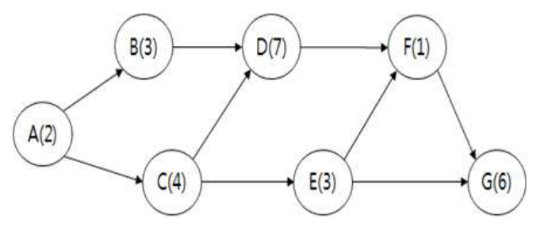
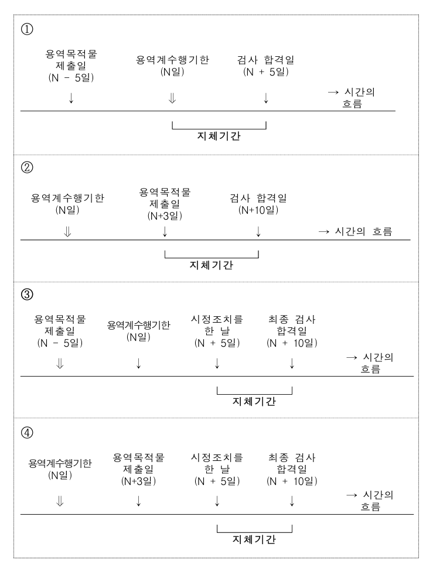

작성 기준: 업로드된 「1-1 정보화법_제도_감리」, 「1-2 사업관리」 강의자료 우선 근거, 외부지식은 보조적으로만 사용(강의자료 미수록 지침은 각 문항에 명시)
정답 출처: 2018년(제19회) 정보시스템 감리사 필기시험 문제 및 답안.pdf (원본 Bold 표시 정답 - 페이지 렌더 이미지 직접 대조 확인)
정답 신뢰도: 매우 높음 (PDF 렌더 이미지 확대 대조로 Bold 표시 검증 완료). 단, 문항 16은 원본에 Bold 표시가 없어 규정 대조로 도출(아래 특이사항 참조)
특이사항
- 문항 2: 원본에 보기 ③·④가 동시에 Bold 처리되어 있어 복수정답으로 확인됨(300dpi 확대 재확인, ②는 Bold 아님)
- 문항 16: 보기 4개가 모두 도해(그림)로 구성되어 있고 원본 PDF 좌측 컬럼 전체에 Bold(stroke) 표시가 전혀 없음(텍스트 렌더 추적으로 확인). 따라서 「용역계약 일반조건」 지체일수 산정 규정과 각 도해의 지체기간 구간을 직접 대조하여 ③번으로 판정하였다(신뢰도: 높음 — 도출 근거는 해당 문항 「정답 해설」에 상세 기재).
법령 기준 주의: 본 회차는 2018년 시행분으로 출제 당시 법령·지침 기준으로 정답이 확정되어 있다. 각 문항의 「관련 이론 정리」 말미에 현행(2025년 기준) 개정사항을 별도 표기하였으므로, 현행 시험 대비 시 반드시 개정 내용을 함께 확인해야 한다.
| 번호 | 정답 | 번호 | 정답 | 번호 | 정답 |
|---|---|---|---|---|---|
| 1 | ③ | 10 | ③ | 19 | ④ |
| 2 | ③,④(복수정답) | 11 | ① | 20 | ② |
| 3 | ③ | 12 | ① | 21 | ③ |
| 4 | ① | 13 | ③ | 22 | ③ |
| 5 | ④ | 14 | ③ | 23 | ③ |
| 6 | ④ | 15 | ③ | 24 | ③ |
| 7 | ② | 16 | ③(원본 Bold 미표시·규정 대조 도출) | 25 | ① |
| 8 | ④ | 17 | ④ | ||
| 9 | ① | 18 | ③ |
2018년 제19회는 2019년과 마찬가지로 사업관리가 앞(1~13번), 법·지침이 뒤(14~25번) 에 배치되었다.
사업관리 영역(1~13번) 은 PMBOK 6판을 명시적으로 인용한 문항(1·3번) 이 등장한 것이 특징이다. 자원 최적화 기법(1번), 획득일정(ES) 이론(2번), 통합 변경통제(3번), 매슬로우 욕구단계(4번), 사업부제 조직(5번), RAM(6번), 명목집단법(7번), 모수 산정법(8번), SV 계산(9번), ADM(10번), 품질관리(11번), 자원 간트 차트(12번), CPM 여유시간(13번)으로 구성되었다. 2번의 획득일정(Earned Schedule) 은 PMBOK 본문이 아닌 확장 이론이라 난도가 높았고 실제로 복수정답 처리되었다.
법·지침 영역(14~25번) 은 감리 실무 절차와 대가 산정에 집중되었다. 공공데이터 포맷 5단계(14번), 전자정부사업관리자 업무(15번), 지체기간 산정 도해(16번), 사업계획서 사례 종합 판단(17번), 감리기준 감리업무(18번), 감리 수행가이드 표준 점검항목(19·20번), 특수관계 배제 대상(21번), 보안약점 진단절차(22번), 과업이행 적/부 판정(23번), 감리원 윤리 가이드(24번), 감리대가 산정기준(25번).
특히 17번은 사업계획서 사례 하나로 의무감리 대상·감리 생략·2단계 감리·감리대가까지 네 규정을 동시에 묻는 종합 문항으로 이 회차 최고난도였다. 19·20번은 「정보시스템감리 수행가이드」의 사업유형별 표준 점검항목을 감리시점 단위로 묻는 유형으로, 강의자료(M04 감리점검해설서)의 사업유형×감리시점×점검영역 3계층 구조를 이해해야 풀린다.
주의할 개정 포인트: 1·3번의 PMBOK 6판은 현행 7판으로 개편되었고, 17번의 감리 생략 요건·22번의 보안약점 진단제도·25번의 감리대가 기준은 모두 개정 이력이 있다. 각 문항의 「관련 이론 정리」에서 현행 내용을 확인할 것.
| 항목 | 내용 |
|---|---|
| 문서명 | 정보시스템 감리사 감리 및 사업관리 기출문제 해설집 - 2018년 제19회 |
| 대상 문항 | Q1 ~ Q25 (감리 및 사업관리) |
| 원본 출처 | 2018년(제19회) 정보시스템 감리사 필기시험 문제 및 답안.pdf |
| 정답 확인 방법 | PDF 페이지 렌더 이미지 대조(굵은 글씨 표시 확인), 자동 추출 결과와 교차검증 |
| 특이 문항 | 문항 2 — 복수정답(③,④) / 문항 16 — 원본 Bold 미표시, 규정 대조로 ③ 도출 |
| 문항 배열 | 사업관리 1~13번 · 법/지침 14~25번(2019년과 동일, 2020·2021년과는 반대) |
| 그림 포함 문항 | 문항 13 — CPM 네트워크(assets/2018/q13.png) / 문항 16 — 지체기간 산정 도해 4종(assets/2018/q16.png), 모두 서술 전사 병기 |
| 근거 강의자료 | 1-1 정보화법_제도_감리(M01~M06), 1-2 사업관리(M07~M12) |
| 강의자료 미수록(외부지식 보완) 항목 | 획득일정(ES) 이론(2번), 명목집단법(7번), 공공데이터 포맷 5단계(14번), 감리 수행가이드 표준 점검항목 세부목록(19·20번), 보안약점 진단절차(22번) |
| 법령 기준 | 2018년 출제 당시 기준 + 현행(2025년) 개정사항 병기 |
PMBOK® Guide(6판)에서 주공정 경로(critical path)를 변경하지 않으면서, 프로젝트에 대한 자원요구사항이 미리 정해진 자원한도를 초과하지 않도록 일정모델의 활동을 조정하는 기법으로 가장 적합한 것은?
① 자원평준화
② 자원균형화
③ 자원평활화
④ 자원제한화
정답 : ③번
정답 신뢰도 : 매우 높음 (원본 이미지 Bold 확인)
| 항목 | 내용 |
|---|---|
| 연도 | 2018년 (제19회) |
| 과목 | 감리 및 사업관리 |
| 문항번호 | 1번 |
| 난이도 | 중 |
| 출제주제 | 시간관리 - 자원 최적화 기법(자원평준화 vs 자원평활화) |
| 연도 | 문항번호 | 핵심개념 |
|---|---|---|
| 2018년 | 1번 | 자원평활화 판별(본 문항) |
| 2019년 | 4번 | 패스트 트래킹 적용 대상(임의적 의존관계) |
★★★★ 자주 출제
PMBOK의 자원 최적화 기법(Resource Optimization Techniques) 은 두 가지다. 둘의 결정적 차이는 주공정 경로(및 프로젝트 완료일)를 건드리느냐 이다.
| 기법 | 조정 범위 | 주공정 경로 | 완료일 |
|---|---|---|---|
| 자원평준화(Resource Leveling) | 여유시간을 넘어서도 조정 | 변경될 수 있음 | 연장될 수 있음 |
| 자원평활화(Resource Smoothing) | 여유시간(Float) 범위 내에서만 조정 | 변경되지 않음 | 연장되지 않음 |
문항은 "주공정 경로를 변경하지 않으면서" 자원한도를 초과하지 않도록 활동을 조정한다고 명시했으므로, 여유시간 범위 안에서만 활동을 옮기는 자원평활화(Resource Smoothing) 가 정답이며 ③번이다.
실재하는 기법이지만 주공정 경로가 변경되고 프로젝트 완료일이 연장될 수 있다는 점에서 문항 조건과 배치된다. 자원이 과부하되거나 특정 시점에만 몰려 있을 때, 완료일 연장을 감수하더라도 자원 사용량을 고르게 만드는 기법이다. 가장 매력적인 오답이다.
PMBOK에 존재하지 않는 용어다. "평준화"와 어감이 비슷해 만들어 낸 허구 보기다.
역시 존재하지 않는 용어다. "자원 제약(Resource Constraint)"이라는 개념은 있으나 기법 명칭은 아니다.
자원 최적화 기법 상세:
| 구분 | 자원평준화(Leveling) | 자원평활화(Smoothing) |
|---|---|---|
| 목적 | 자원 공급 제약 충족(자원이 부족·과부하일 때) | 자원 사용량을 고르게(한도 내 유지) |
| 조정 근거 | 여유시간 초과 가능 | 여유시간(Total/Free Float) 이내 |
| 주공정 경로 | 변경 가능 | 변경 없음 |
| 완료일 | 연장 가능 | 유지 |
| 적용 상황 | 핵심 자원이 절대적으로 부족 | 자원 한도(Peak) 초과만 해소하면 되는 경우 |
혼동하기 쉬운 인접 개념:
| 개념 | 내용 | 대가(Trade-off) |
|---|---|---|
| 자원평준화 | 자원 제약에 맞춰 일정 조정 | 완료일 연장 |
| 자원평활화 | 여유시간 내 조정 | 완료일 유지(대신 효과 제한적) |
| 크래싱(Crashing) | 자원 추가 투입으로 기간 단축 | 원가 증가 |
| 패스트 트래킹(Fast Tracking) | 순차 활동 병행 수행 | 리스크·재작업 증가 |
앞의 두 개는 자원 문제를 푸는 기법, 뒤의 두 개는 일정 단축 기법이라는 점에서 목적이 다르다.
강의자료 연계(M09 범위·시간관리 「9. 일정개발·자원최적화·시뮬레이션」, 「10. 일정 단축 기법」): 강의자료는 자원 최적화(평준화·평활화)와 일정 단축(크래싱·패스트트래킹)을 별도 절로 구분해 정리하고 있다.
▶ 현행(2025년 기준) 개정사항: PMBOK 7판(2021) 은 지식영역·프로세스 중심 구조에서 12개 원칙 + 8개 성과영역 중심으로 개편되었다. 자원평준화·평활화는 「모델·방법·결과물(Models, Methods, and Artifacts)」 부록에 방법론으로 계속 수록되어 있으며, 개념과 구분 기준은 동일하게 유지된다.
SI 프로젝트에서 특정 주에 개발자가 12명 필요한데 확보 가능한 인원이 8명뿐이라면, 먼저 여유시간이 있는 활동을 뒤로 미뤄(평활화) 피크를 낮춘다. 그래도 8명을 넘으면 주공정상 활동까지 밀어야 하므로 평준화를 적용하고 완료일 연장을 발주기관과 협의한다. 감리원은 자원계획 검토 시 투입계획의 피크가 실제 확보 가능 인력을 초과하지 않는지, 초과한다면 그 해소 방안(평활화/평준화/증원)이 문서화되어 있는지를 점검한다.
이 문항은 "주공정 경로를 변경하지 않으면서" 라는 한 구절만 잡으면 즉시 풀린다. 두 기법의 판별 문장을 통째로 외워 둘 것.
평준화 = 주공정 바뀜(완료일 연장 가능) / 평활화 = 주공정 안 바뀜(여유시간 내에서만)
또한 보기에 "자원균형화", "자원제한화" 처럼 그럴듯한 허구 용어를 배치하는 것이 정형 함정이므로, 실재하는 기법이 딱 두 개라는 점을 기억하면 보기 절반이 자동 소거된다.
획득일정(earned schedule)을 설명한 것 중 적절하지 않은 것은?
① 획득일정 이론은 획득일정(ES), 실제시간(AT) 및 예상기간을 사용하여 프로젝트 완료일을 예측하는 공식도 제시한다.
② 기존의 획득가치관리(EVM)에 사용된 일정차이(SV) 측정치를 획득일정(ES) 및 실제시간(AT)으로 대체한다.
③ 획득일정지표를 사용한 일정성과지수(SPI)는 실제시간(AT)/획득일정(ES)으로 표시한다.
④ 획득일정(ES)이 0보다 큰 경우 프로젝트는 일정보다 앞선 것으로 간주된다.
정답 : ③번, ④번 (복수정답 처리)
정답 신뢰도 : 매우 높음 (원본 답안 이미지에서 ③, ④ 두 보기가 모두 Bold 처리되어 있음을 300dpi 확대 대조로 확인. ②는 Bold가 아님을 함께 확인. 실제 시험 시행기관이 이의제기 심사 등을 거쳐 복수정답으로 처리한 것으로 판단됨)
| 항목 | 내용 |
|---|---|
| 연도 | 2018년 (제19회) |
| 과목 | 감리 및 사업관리 |
| 문항번호 | 2번 |
| 난이도 | 상 |
| 출제주제 | 원가·일정관리 - 획득일정(Earned Schedule) 이론 |
| 연도 | 문항번호 | 핵심개념 |
|---|---|---|
| 2018년 | 2번 | 획득일정(ES) 이론 판별(본 문항, 복수정답) |
| 2018년 | 9번 | SV 계산 |
| 2019년 | 3번 | PV·SPI로 EV 역산 후 ETC 계산 |
| 2020년 | 13번 | EVM 차이·지수 판정 |
★★★ 보통 출제 (ES 단독으로는 저빈도, EVM 전체로는 최빈출)
본 문항은 원본 답안에서 ③과 ④ 두 보기가 모두 Bold 로 표시되어 복수정답으로 처리된 것으로 확인된다. 두 보기가 각각 "적절하지 않은 것"에 해당하는 근거는 다음과 같다.
③ (틀림 — 분자·분모가 뒤바뀜)
획득일정 기반 일정성과지수는 SPI(t) = ES ÷ AT 이다. 즉 분자가 획득일정(ES), 분모가 실제시간(AT) 이다. 보기는 이를 "AT ÷ ES"로 뒤집어 놓았다. 기존 EVM의 SPI = EV ÷ PV에서 성과(획득한 것)가 항상 분자에 온다는 원칙과 동일하므로, ES가 분자여야 한다. 명백한 오류다.
④ (틀림 — 판정 기준이 잘못됨)
ES는 "현재 달성한 진척이 계획상 언제에 해당하는가"를 나타내는 시점(시간) 값이다. 프로젝트가 진행되면 ES는 당연히 0보다 커진다(착수 직후를 제외하면 항상 양수). 따라서 "ES > 0" 자체는 일정 선행 여부와 아무 관련이 없다.
일정 선행 여부의 올바른 판정 기준은 ES와 AT의 비교다.
| 조건 | 해석 |
|---|---|
| ES > AT (SV(t) > 0, SPI(t) > 1) | 일정 선행 |
| ES = AT | 계획대로 |
| ES < AT (SV(t) < 0, SPI(t) < 1) | 일정 지연 |
즉 ④는 "SV(t) = ES − AT 가 0보다 큰 경우"라고 했어야 옳다. ES 단독으로 0과 비교하는 것은 의미가 없으므로 오류다.
두 보기 모두 명확한 오류를 포함하고 있어 정답을 하나로 특정할 수 없었고, 시행기관이 복수정답 처리한 것으로 판단된다.
획득일정 이론은 SV(t)·SPI(t) 같은 차이·지수뿐 아니라, ES와 AT를 이용해 완료 예상 기간(IEAC(t): Independent Estimate at Completion - time) 을 산출하는 예측 공식도 함께 제시한다. 대표 공식은 IEAC(t) = PD ÷ SPI(t) (PD = 계획 기간)이다. 옳은 설명이다.
획득일정 이론의 핵심 착안점이 바로 이것이다. 기존 EVM의 SV = EV − PV는 금액 단위여서 "3천만원 지연"처럼 직관적이지 않고, 무엇보다 프로젝트 종료 시점에 EV = PV = BAC가 되어 SV가 자동으로 0이 되는 치명적 한계가 있다(실제로는 늦게 끝났는데도 "일정 차이 없음"으로 나옴). ES 이론은 이를 ES와 AT라는 시간 단위 측정치로 대체하여 해결한다. 옳은 설명이다.
기존 EVM 일정지표 vs 획득일정(ES) 지표:
| 구분 | 기존 EVM | 획득일정(ES) |
|---|---|---|
| 단위 | 금액 | 시간 |
| 일정차이 | SV = EV − PV | SV(t) = ES − AT |
| 일정성과지수 | SPI = EV ÷ PV | SPI(t) = ES ÷ AT |
| 종료 시점 한계 | SV → 0, SPI → 1로 수렴(왜곡) | 왜곡 없음(실제 지연이 그대로 드러남) |
| 완료 예측 | — | IEAC(t) = PD ÷ SPI(t) |
ES(획득일정)의 정의:
현재까지 획득한 가치(EV)가 계획선(PV 곡선) 상에서 언제에 해당하는가를 시간으로 환산한 값.
예: 현재 EV가 계획상 5개월 차 수준이라면 ES = 5개월. 이때 실제 경과 시간이 6개월(AT = 6)이면 SV(t) = 5 − 6 = −1개월 → 1개월 지연.
기존 SV의 한계 예시:
| 시점 | EV | PV | SV | 실제 상황 |
|---|---|---|---|---|
| 중반 | 60 | 80 | −20(지연 감지 ○) | 지연 중 |
| 종료 시 | 100 | 100 | 0(지연 감지 ✕) | 2개월 늦게 끝남 |
이 때문에 프로젝트 후반부에는 기존 SPI가 무조건 1로 수렴해 일정 관리 지표로 쓸 수 없다는 문제가 있고, ES 이론이 이를 보완한다.
강의자료 연계(M10 원가·품질관리 「5. EVM 기본값·차이·지수」, 「6. EVM 예측」): 강의자료는 기존 EVM의 SV·CV·SPI·CPI와 EAC·ETC·VAC·TCPI를 체계적으로 정리하고 있다. 다만 획득일정(Earned Schedule) 확장 이론은 별도 절로 수록되어 있지 않아 본 해설은 ES 이론 원문을 근거로 재구성하였다.
▶ 현행(2025년 기준) 참고: 획득일정(ES)은 PMBOK 본문의 표준 기법이 아니라 PMI가 인정하는 확장(Practice) 이론으로, 「Practice Standard for Earned Value Management」 등에서 다룬다. 최근 국내 감리사 시험에서도 EVM 심화 주제로 간헐적으로 출제된다.
대형 SI 사업의 후반부(진척 85% 이상)에서는 기존 SPI가 0.98~1.00 근처에 머물러 실제 지연을 전혀 반영하지 못하는 현상이 흔하다. 이때 ES 기반 SPI(t) 를 함께 산출하면 "계획상 10개월 차 진척인데 실제 12개월이 경과 → SPI(t) = 0.83"처럼 지연이 시간 단위로 명확히 드러난다. 감리원은 진척 감리에서 후반부 일정 지표가 왜곡되고 있지 않은지, 마일스톤 기준 실적과 EVM 지표가 상충하지 않는지를 교차 확인한다.
EVM 계열 문항의 최대 함정은 언제나 분자·분모 뒤집기다. 기억할 원칙은 하나다.
성과(획득한 것)가 항상 분자 — SPI = EV ÷ PV, CPI = EV ÷ AC, SPI(t) = ES ÷ AT
또한 "~가 0보다 크면 선행" 류 서술이 나오면 무엇과 무엇을 뺀 값인지를 반드시 확인해야 한다. 차이(SV, SV(t))는 0과 비교하지만, ES 같은 단독 값은 0과 비교하는 것이 무의미하다. 본 문항의 ④가 정확히 이 함정이다.
PMBOK® Guide(6판)에서 프로젝트 통합 변경통제를 설명한 것 중 가장 적절하지 않은 것은?
① 프로젝트 시작에서부터 완료시점까지 수행되는 통합 변경통제 수행 프로세스의 최종책임자는 프로젝트 관리자이다.
② 기준선이 설정되기 전에 통합 변경통제 수행 프로세스를 통해 공식적으로 변경요청을 통제할 필요가 없다.
③ 구두요청으로 변경을 접수해서는 안 되며, 변경사항은 반드시 서면형식으로 기록하여야 한다.
④ 변경사항은 변경관리 및 형상관리 시스템에 입력하여야 한다.
정답 : ③번
정답 신뢰도 : 매우 높음 (원본 이미지 Bold 확인)
| 항목 | 내용 |
|---|---|
| 연도 | 2018년 (제19회) |
| 과목 | 감리 및 사업관리 |
| 문항번호 | 3번 |
| 난이도 | 중 |
| 출제주제 | 통합관리 - 통합 변경통제 수행(Perform Integrated Change Control) |
| 연도 | 문항번호 | 핵심개념 |
|---|---|---|
| 2018년 | 3번 | 통합 변경통제 설명 판별(본 문항) |
| (강의자료 수록 기출) | — | 변경 승인 주체 = CCB(PM 단독 승인 ✕) |
★★★★ 자주 출제
PMBOK은 변경요청의 접수 형식과 기록 형식을 구분한다.
"변경요청은 구두로 접수될 수 있으나, 반드시 서면 형식으로 기록되어 변경관리 및/또는 형상관리 시스템에 입력되어야 한다."
즉 구두 요청 자체를 금지하지 않는다. 현장에서 이해관계자가 구두로 변경을 요청하는 것은 자연스러운 일이며, PM은 이를 접수한 뒤 서면화하여 공식 변경관리 절차에 태우면 된다. 중요한 것은 "접수 금지"가 아니라 "기록 의무" 다.
보기 ③은 "구두요청으로 변경을 접수해서는 안 되며"라고 하여 접수 자체를 금지하는 것으로 서술했으므로, PMBOK의 취지와 어긋나는 가장 적절하지 않은 설명이며 정답은 ③번이다. 뒷부분("서면형식으로 기록하여야 한다")은 옳지만 앞부분이 틀려 전체가 오답이 되는 구조다.
PMBOK은 통합 변경통제 수행 프로세스가 프로젝트 착수부터 완료까지 지속되며, 최종 책임은 프로젝트 관리자에게 있다고 명시한다(변경통제위원회 CCB가 승인 권한을 갖더라도 프로세스 운영의 최종 책임자는 PM이다). 옳은 설명이다.
기준선(Baseline)이 설정되기 전에는 통제할 기준 자체가 없으므로 공식적인 변경통제 절차를 거칠 필요가 없다. 기준선 승인 이후의 변경부터가 공식 변경통제 대상이다. 옳은 설명이다.
변경사항을 변경관리 시스템 및/또는 형상관리 시스템에 입력하여 추적 가능하게 하는 것은 통합 변경통제의 핵심 요구사항이다. 옳은 설명이다.
통합 변경통제 수행 프로세스:
| 항목 | 내용 |
|---|---|
| 목적 | 모든 변경요청을 검토·승인/기각·관리하고 승인된 변경만 기준선에 반영 |
| 수행 시기 | 프로젝트 착수 ~ 완료 전 기간 |
| 최종 책임 | 프로젝트 관리자 |
| 승인 권한 | 변경통제위원회(CCB) (조직·계약에 따라 스폰서·발주기관) |
| 대상 시점 | 기준선 설정 이후의 변경 |
| 요청 형식 | 구두 접수 가능 → 반드시 서면 기록 |
| 기록 위치 | 변경관리 시스템 / 형상관리 시스템 |
변경 처리 흐름:
변경요청 접수(구두 가능) → 서면 기록 → 영향분석(범위·일정·원가·품질·리스크) → CCB 심의 → 승인/기각 → 승인 시 기준선 갱신 → 관련 계획·문서 갱신 → 이해관계자 통보
변경관리 vs 형상관리:
| 구분 | 대상 | 내용 |
|---|---|---|
| 변경관리(Change Management) | 변경 요청·승인 절차 | 무엇을 바꿀지 결정하는 프로세스 |
| 형상관리(Configuration Management) | 산출물의 버전·상태 | 산출물 식별·통제·상태 기록·감사 |
강의자료 연계(M07 통합관리(1·4장)): 강의자료는 통합 변경통제와 CCB를 다루며, 기출문제로 "변경요청은 통합 변경통제를 거쳐 검토된다. 변경 승인/기각은 CCB가 수행한다. 승인된 변경만 기준선(Baseline)에 반영된다. / (오답) 변경요청은 PM이 단독으로 승인하며 별도 검토가 필요 없다" 를 수록해 정답 ④(PM 단독 승인은 오류) 로 제시하고 있다.
▶ 현행(2025년 기준) 개정사항: PMBOK 7판에서는 변경통제가 「불확실성(Uncertainty)」·「전달(Delivery)」 성과영역과 「변화(Change)」 원칙에 녹아 들어갔으며, 적응형(애자일) 환경에서는 CCB 대신 반복 단위 백로그 재우선순위화로 변경을 처리한다는 점이 강조된다. 다만 "변경은 기록되고 추적되어야 한다" 는 원칙은 동일하다.
공공 SI 현장에서 현업 담당자가 회의 중 "이 화면에 항목 하나만 추가해 달라"고 구두로 요청하는 일은 매우 흔하다. 이때 거절하는 것이 아니라, 그 자리에서 변경요청서(CR)로 작성해 접수하는 것이 올바른 대응이다. 구두 요청을 기록 없이 바로 반영하면 나중에 범위·공수 분쟁이 생기고, 반대로 "구두는 안 받는다"며 차단하면 현업과의 협업이 무너진다. 감리원은 변경관리대장의 CR이 실제 산출물 변경 이력과 일치하는지, 미등록 변경(암묵적 반영)이 없는지를 점검한다.
본 문항은 "부분적으로 맞는 문장에 틀린 조건을 앞에 붙이는" 전형적 함정이다. ③의 뒷문장("서면 기록")만 보면 맞는 말이라 그냥 넘어가기 쉬우므로, 문장을 끝까지 나눠 읽는 습관이 필요하다.
기억할 원칙: "금지되는 것은 구두 접수가 아니라 기록 없는 처리". 유사하게 감리·사업관리 영역에서는 "~해서는 안 된다"는 절대 금지 표현이 등장하면 우선 의심하는 것이 좋다. 실제 규정은 대부분 "~할 수 있으나 ~해야 한다"는 조건부 허용 형태이기 때문이다.
프로젝트 구성원의 동기부여를 위해 매슬로우의 욕구단계가 활용된다. 매슬로우 5가지 욕구단계를 순서대로 올바르게 나열한 것은?
(제시 상자)
- 가. 존경욕구
- 나. 사회적욕구
- 다. 생리적욕구
- 라. 자아실현욕구
- 마. 안전욕구
① 다, 마, 나, 가, 라
② 다, 나, 가, 라, 마
③ 다, 마, 가, 나, 라
④ 다, 나, 마, 가, 라
정답 : ①번
정답 신뢰도 : 매우 높음 (원본 이미지 Bold 확인)
| 항목 | 내용 |
|---|---|
| 연도 | 2018년 (제19회) |
| 과목 | 감리 및 사업관리 |
| 문항번호 | 4번 |
| 난이도 | 하 |
| 출제주제 | 인적자원관리 - 매슬로우 욕구 5단계 |
| 연도 | 문항번호 | 핵심개념 |
|---|---|---|
| 2016년 | 8번 | 공정성 이론 비교 기준 |
| 2018년 | 4번 | 매슬로우 욕구 5단계 순서(본 문항) |
| 2020년 | 21번 | Herzberg 위생요인 판별 |
★★★★ 자주 출제
매슬로우(Maslow)의 욕구단계이론은 인간의 욕구가 하위에서 상위로 계층을 이루며, 하위 욕구가 충족되어야 상위 욕구가 동기부여 요인으로 작동한다고 본다.
| 단계 | 욕구 | 내용 | 본 문항 기호 |
|---|---|---|---|
| 1 | 생리적 욕구 | 의식주, 수면 등 생존 | 다 |
| 2 | 안전 욕구 | 신체적·경제적 안전, 고용 안정 | 마 |
| 3 | 사회적 욕구(소속·애정) | 소속감, 인간관계 | 나 |
| 4 | 존경 욕구 | 인정, 지위, 성취에 대한 존중 | 가 |
| 5 | 자아실현 욕구 | 잠재력 실현, 성장 | 라 |
따라서 순서는 다(생리) → 마(안전) → 나(사회) → 가(존경) → 라(자아실현) 이며 정답은 ①번이다.
안전(마)을 맨 뒤로 보냈다. 안전은 생리 바로 다음의 2단계이며, 자아실현(라)이 마지막이어야 한다.
사회적 욕구(나)와 존경 욕구(가)의 순서가 뒤바뀌었다. 소속(사회) → 존경 순이 맞다. 두 단계만 바꿔 놓은 가장 매력적인 오답이다.
안전(마)과 사회(나)의 순서가 뒤바뀌었다. 안전 → 사회 순이 맞다.
매슬로우 욕구 5단계 상세:
| 구분 | 단계 | 조직에서의 예 |
|---|---|---|
| 결핍욕구(Deficiency) | 1. 생리적 | 급여, 휴식, 근무환경 |
| 결핍욕구 | 2. 안전 | 고용 안정, 안전한 작업환경, 복리후생 |
| 결핍욕구 | 3. 사회적(소속) | 팀워크, 동료 관계, 소속감 |
| 성장욕구(Growth) | 4. 존경 | 인정, 승진, 직위, 성과 보상 |
| 성장욕구 | 5. 자아실현 | 도전적 과업, 자율성, 역량 개발 |
주요 동기이론 비교(강의자료 M11 수록):
| 이론 | 분류 | 핵심 |
|---|---|---|
| 매슬로우 욕구 5단계 | 내용이론 | 생 → 안 → 사 → 존 → 자, 하위 충족 후 상위 이동 |
| 허즈버그 2요인 | 내용이론 | 위생요인(불만 방지) / 동기요인(만족·동기부여) |
| 맥클리랜드 성취동기 | 내용이론 | 성취·권력·친교 욕구 |
| 맥그리거 X·Y이론 | 내용이론 | X: 통제·지시 / Y: 자율·권한위임 |
| 브룸 기대이론 | 과정이론 | 동기 = 기대 × 수단성 × 유의성 |
| 애덤스 공정성이론 | 과정이론 | 투입 대비 산출을 타인과 비교 |
⚠ 강의자료 명시 함정: 강의자료는 「애덤스·브룸은 '과정이론'(매슬로·허즈버그는 내용이론)임을 반드시 구분」 하라고 경고하고 있다. 이론명을 순서 문제로만 외우지 말고 내용이론/과정이론 분류도 함께 정리할 것.
매슬로우 이론의 한계(참고):
| 한계 | 내용 |
|---|---|
| 단계 고정성 | 실제로는 여러 욕구가 동시에 작동하거나 역행할 수 있음 |
| 문화적 차이 | 개인주의/집단주의 문화에 따라 우선순위가 달라짐 |
| 실증 근거 부족 | 단계별 순차 이동에 대한 실증 연구가 제한적 |
| 대안 이론 | 앨더퍼의 ERG 이론(존재·관계·성장 3단계, 역행 가능)이 이를 보완 |
강의자료 연계(M11 인적자원·위험관리 「2. 동기이론」): 강의자료는 동기이론 비교표에서 "매슬로 욕구 5단계: 생리 → 안전 → 사회(소속) → 존경 → 자아실현. 하위 충족 후 상위로 이동" 을 명시하고 있어 본 문항이 그대로 대응된다.
프로젝트 팀 동기부여 설계 시 단계별 접근이 유용하다. 야근이 반복되는 상황에서 "도전적 과업(자아실현)"을 부여해 봐야 효과가 없고, 먼저 근무 환경·고용 안정(생리·안전) 을 확보한 뒤 팀 결속(사회), 성과 인정(존경), 성장 기회(자아실현) 순으로 접근해야 한다. 특히 SI 프로젝트에서 파견·계약 인력은 안전 욕구(계약 연장 불확실성) 가 충족되지 않은 경우가 많아, 이를 방치한 채 상위 동기부여를 시도하면 실패한다.
매슬로우 문항은 순서 나열형으로만 출제되며, "생·안·사·존·자" 다섯 글자만 외우면 확실히 맞출 수 있는 최고의 득점 문항이다. 오답은 항상 인접한 두 단계를 서로 바꾸는 방식(안전↔사회, 사회↔존경)으로 만들어지므로, 순서를 소리 내어 외워 두면 즉시 판별된다.
변형으로 "내용이론에 속하지 않는 것"(→ 브룸·애덤스), "과정이론에 속하는 것"(→ 브룸 기대이론) 형태가 자주 출제되므로 분류도 함께 정리할 것.
사업부제 조직의 장점으로 가장 거리가 먼 것은?
① 각 사업부는 사업목표와 제품을 강조하고 이익 및 책임중심으로 운영되므로 경영성과가 향상된다.
② 환경변화에 대하여 신속하고 탄력적으로 대응할 수 있다.
③ 관리자를 양성하고 종업원을 동기부여 시키는데 도움을 준다.
④ 사업부간 협조가 용이하고 과당경쟁이 발생하지 않으며 공통관리비가 줄어든다.
정답 : ④번
정답 신뢰도 : 매우 높음 (원본 이미지 Bold 확인)
| 항목 | 내용 |
|---|---|
| 연도 | 2018년 (제19회) |
| 과목 | 감리 및 사업관리 |
| 문항번호 | 5번 |
| 난이도 | 중 |
| 출제주제 | 인적자원관리 - 사업부제 조직의 장단점 |
| 연도 | 문항번호 | 핵심개념 |
|---|---|---|
| 2018년 | 5번 | 사업부제 조직 장점 판별(본 문항) |
| 2019년 | 12번 | 조직구조 설계 6대 핵심요소 |
| 2020년 | 14번 | 강한/약한 매트릭스 조직 구분 |
★★★ 보통 출제
사업부제 조직은 제품·지역·고객 등을 기준으로 조직을 나누고, 각 사업부에 독립적인 기능(개발·생산·영업·관리)과 이익 책임(Profit Center) 을 부여하는 형태다.
이 구조의 가장 대표적인 단점이 바로 ④가 서술한 내용의 정반대다.
| ④의 서술 | 실제 사업부제의 특성 |
|---|---|
| "사업부간 협조가 용이하고" | 각 사업부가 독립 채산으로 운영되어 협조가 어렵다(사일로화) |
| "과당경쟁이 발생하지 않으며" | 사업부 간 실적 경쟁으로 과당경쟁·자원 쟁탈이 발생한다 |
| "공통관리비가 줄어든다" | 각 사업부가 유사 기능을 중복 보유하여 공통관리비가 증가한다 |
세 가지 서술이 모두 사업부제의 단점을 장점으로 뒤집어 놓았으므로 ④번이 정답이다.
①②③은 모두 사업부제의 실제 장점에 해당한다.
각 사업부가 사업목표·제품 단위로 이익 및 책임 중심(Profit Center) 으로 운영되어 성과 책임이 명확해지고, 그 결과 경영성과가 향상된다. 사업부제 도입의 가장 큰 이유다. 옳은 장점이다.
사업부가 자체 의사결정 권한을 갖고 있어 시장·환경 변화에 신속하고 탄력적으로 대응할 수 있다. 옳은 장점이다.
사업부장이 사실상 소규모 기업의 경영자 역할을 수행하므로 차세대 관리자(경영자) 육성에 효과적이고, 성과가 사업부 단위로 가시화되어 동기부여에도 기여한다. 옳은 장점이다.
사업부제 조직의 장단점:
| 장점 | 단점 |
|---|---|
| 성과 책임 명확(이익 중심점) | 기능 중복 → 공통관리비·자원 낭비 증가 |
| 환경 변화에 신속·탄력 대응 | 사업부 간 과당경쟁·협조 곤란(사일로) |
| 관리자(경영자) 육성에 유리 | 전사 차원의 시너지·표준화 저해 |
| 사업부 단위 동기부여 | 사업부 이기주의(단기 실적 편중) |
| 최고경영층이 전략에 집중 가능 | 규모의 경제 상실 |
조직 유형 비교:
| 유형 | 편성 기준 | 장점 | 단점 |
|---|---|---|---|
| 기능조직 | 기능(개발·영업·인사) | 전문성 심화, 규모의 경제 | 부서 간 조정 어려움, 대응 느림 |
| 사업부제 조직 | 제품·지역·고객 | 책임 명확, 신속 대응 | 중복·과당경쟁, 관리비 증가 |
| 매트릭스 조직 | 기능 × 프로젝트 | 자원 공유, 전문성+대응성 | 명령일원화 위배(이중보고), 갈등 |
| 프로젝트화 조직 | 프로젝트 | PM 전권, 몰입도 높음 | 자원 비효율, 종료 시 인력 불안 |
프로젝트 조직 유형별 PM 권한(2020년 14번과 연계):
| 유형 | PM 권한 | PM 근무형태 |
|---|---|---|
| 기능조직 | 매우 낮음 | 파트타임 |
| 약한 매트릭스 | 낮음(조정자·촉진자) | 파트타임 |
| 균형 매트릭스 | 중간 | 풀타임 |
| 강한 매트릭스 | 높음 | 풀타임 |
| 프로젝트화 | 매우 높음(전권) | 풀타임 |
강의자료 연계(M11 인적자원·위험관리 - 조직 형태): 강의자료는 조직 유형별 PM 권한 비교표를 수록하고 있다. 사업부제 조직 자체의 장단점 목록은 별도 절로 수록되어 있지 않아 본 해설의 장단점 표는 조직론 일반 이론으로 보완하였다.
대형 SI 기업이 공공사업부·금융사업부·제조사업부로 조직을 나누면 각 사업부가 해당 도메인의 영업·수행·품질을 모두 책임져 대응 속도와 전문성이 올라간다. 그러나 실제로는 같은 솔루션을 세 사업부가 각각 개발하거나, 한 고객사에 두 사업부가 동시에 제안해 내부 경쟁이 벌어지는 문제가 자주 발생한다. 이를 보완하기 위해 전사 공통 기능(품질보증, 아키텍처, 구매)을 CoE(Center of Excellence) 로 별도 운영하는 것이 일반적이다.
조직 유형 문항은 "장점을 묻고 단점을 하나 섞어 넣는"(또는 그 반대) 방식이 정형이다. 사업부제의 경우 "협조 용이", "과당경쟁 없음", "관리비 절감" 이 세 표현이 등장하면 거의 확실히 오답이다. 사업부제의 본질이 "나눠서 독립적으로 책임진다" 이므로, 나눈 결과로 생기는 중복·경쟁·조정 비용은 필연적 단점이라는 논리로 기억하면 헷갈리지 않는다.
프로젝트 팀 관리를 위해 사용하는 책임배정 매트릭스(RAM : Responsibility Assignment Matrix)를 설명한 내용으로 가장 거리가 먼 것은?
① 프로젝트 범위(project scope)의 각 구성요소가 담당자 또는 담당조직에게 배정될 수 있도록 표시한 것이다.
② OBS(Organizational Breakdown Structure)를 WBS(Work Breakdown Structure)와 연계시킨 것이다.
③ 한 그룹에 연관된 모든 활동 혹은 활동에 연관된 모든 사람이나 조직을 확인할 수 있다.
④ 직무의 내용을 텍스트 형태로 상세히 기술한 직위설명서(position description)이다.
정답 : ④번
정답 신뢰도 : 매우 높음 (원본 이미지 Bold 확인)
| 항목 | 내용 |
|---|---|
| 연도 | 2018년 (제19회) |
| 과목 | 감리 및 사업관리 |
| 문항번호 | 6번 |
| 난이도 | 중 |
| 출제주제 | 인적자원관리 - 책임배정 매트릭스(RAM) |
| 연도 | 문항번호 | 핵심개념 |
|---|---|---|
| 2018년 | 6번 | RAM 설명 판별(본 문항) |
| 2018년 | 12번 | 자원 간트 차트(인적자원 도표·도구) |
★★★ 보통 출제
프로젝트에서 역할과 책임(Roles & Responsibilities) 을 문서화하는 방식은 세 가지로 구분된다.
| 형식 | 내용 | 예시 |
|---|---|---|
| 계층형(Hierarchical) | 조직도 형태로 위계 표현 | OBS, RBS(자원분류체계), WBS |
| 매트릭스형(Matrix) | 작업 × 담당자 교차표 | RAM, RACI 도표 |
| 텍스트형(Text-oriented) | 서술 형태로 상세 기술 | 직위설명서(Position Description), 역할·책임 기술서 |
RAM은 매트릭스형이고, 직위설명서는 텍스트형으로 서로 다른 범주의 문서다. 보기 ④는 RAM을 텍스트형인 직위설명서라고 설명했으므로 가장 거리가 먼 설명이며 정답은 ④번이다.
직위설명서는 특정 직위의 책임·권한·요구 역량·보고 관계 등을 문장으로 상세히 기술하는 문서로, 담당자별 상세 정보가 필요할 때 사용한다. 반면 RAM은 어떤 작업에 누가 관여하는지를 한눈에 보는 표다.
RAM의 정의 그 자체다. 프로젝트 범위의 각 구성요소(작업 패키지)가 담당자 또는 담당조직에 빠짐없이 배정되었는지를 표시한다. 옳은 설명이다.
RAM = WBS + OBS 라는 구조를 정확히 서술했다. 행에 WBS의 작업, 열에 OBS의 조직·담당자를 놓고 교차점에 책임 유형을 기입한다. 옳은 설명이다.
RAM은 행 방향으로 읽으면 한 활동에 관여하는 모든 사람·조직을, 열 방향으로 읽으면 한 사람·조직이 관여하는 모든 활동을 확인할 수 있다. 매트릭스 구조의 핵심 장점이다. 옳은 설명이다.
RACI 도표(RAM의 대표 유형):
| 코드 | 의미 | 설명 | 개수 제약 |
|---|---|---|---|
| R | Responsible(실행) | 실제 작업을 수행하는 자 | 복수 가능 |
| A | Accountable(책임·승인) | 최종 책임을 지고 승인하는 자 | 활동당 반드시 1명 |
| C | Consult(자문) | 사전에 의견을 구하는 자(양방향 소통) | 복수 가능 |
| I | Inform(통보) | 결과를 통보받는 자(단방향 소통) | 복수 가능 |
RACI 작성 규칙(출제 포인트):
| 규칙 | 내용 |
|---|---|
| A는 활동당 1명 | 책임 소재가 분산되면 안 됨(A가 2명 이상이면 오류) |
| R은 최소 1명 | 수행자가 없는 활동은 존재할 수 없음 |
| C·I 과다 주의 | 너무 많으면 의사소통 비용 급증 |
| 빈 행·빈 열 금지 | 담당자 없는 작업, 역할 없는 인원은 재검토 대상 |
RAM 예시:
| 작업(WBS) | PM | 분석가 | 개발자 | QA | 발주기관 |
|---|---|---|---|---|---|
| 요구사항 정의 | A | R | C | I | C |
| 설계 | A | C | R | C | I |
| 개발 | A | I | R | C | — |
| 시험 | A | I | C | R | I |
강의자료 연계(M11 인적자원·위험관리): 강의자료는 「RAM(Responsibility Assignment Matrix)는 작업 패키지에 할당된 프로젝트 자원을 보여주는데 사용하는 표. RAM = WBS + OBS. RAM의 한 유형으로 RACI 도표가 있음」 을 명시하고 있어, 본 문항 보기 ②가 강의자료 문장 그대로임을 확인할 수 있다.
▶ 현행(2025년 기준) 개정사항: PMBOK 7판에서는 RACI·RAM이 「모델·방법·결과물」 부록의 결과물(Artifacts) 로 계속 수록된다. 애자일 환경에서는 RACI 대신 스쿼드·팀 단위 공동 책임(Collective Ownership) 을 강조하는 경향이 있으나, 공공 SI처럼 다수 이해관계자가 얽힌 사업에서는 여전히 필수 도구다.
공공 SI 사업 착수 시 사업수행계획서에 RACI를 첨부하는 것이 표준이다. 실무에서 가장 흔한 문제는 "A(최종 책임)가 여러 명이거나 아예 없는 경우" 로, 이런 활동은 반드시 지연되거나 책임 공백이 발생한다. 또 하나는 발주기관 담당자가 모든 활동에 C(자문)로 들어가 있어 의사결정이 병목되는 경우다. 감리원은 착수 감리에서 RACI의 A 유일성, 빈 행·빈 열 존재 여부, 실제 회의체·승인 절차와의 정합성을 점검한다.
RAM 문항의 정답은 대개 "다른 범주의 문서와 혼동시키는 보기" 다. 본 문항의 직위설명서(텍스트형) 가 대표적이며, 그 밖에 조직도(계층형), 자원 히스토그램(자원량 그래프), 자원 달력 등이 오답 후보로 쓰인다.
기억할 축: 역할·책임 문서 3형식 = 계층형(OBS) / 매트릭스형(RAM·RACI) / 텍스트형(직위설명서).
추가로 "A는 활동당 1명" 은 RACI 관련 문항의 단골 정답 포인트이므로 반드시 함께 외울 것.
명목집단법(nominal group technique)에 대한 설명으로 가장 거리가 먼 것은?
① 사실의 발견, 아이디어 생성, 그리고 최종 의사결정에 사용될 수 있다.
② 소그룹으로 편성된 참석자들의 원활한 논의와 토론을 통해 사실을 도출한다.
③ 도출된 아이디어 목록에 대해서 각자 보조 설명이나 지지하는 이유를 설명한다.
④ 마무리 단계에서 구성원들이 순위를 매긴 결과를 종합하여 최고 득표한 안을 채택한다.
정답 : ②번
정답 신뢰도 : 매우 높음 (원본 이미지 Bold 확인)
| 항목 | 내용 |
|---|---|
| 연도 | 2018년 (제19회) |
| 과목 | 감리 및 사업관리 |
| 문항번호 | 7번 |
| 난이도 | 상 |
| 출제주제 | 의사소통·의사결정 - 명목집단법(NGT) |
| 연도 | 문항번호 | 핵심개념 |
|---|---|---|
| 2018년 | 7번 | 명목집단법 설명 판별(본 문항) |
| 2019년 | 10번 | 델파이는 통제 기법이 아닌 식별 기법 |
★★★ 보통 출제
명목집단법의 이름에 답이 들어 있다. "명목상의(nominal) 집단"이란 사람들이 한자리에 모여 있지만 실제로는 집단으로 상호작용하지 않고 개별적으로 작업한다는 뜻이다.
이 기법이 만들어진 이유가 바로 자유토론의 폐해를 막기 위해서다. 일반적인 브레인스토밍은 목소리 큰 사람의 지배, 상급자 눈치 보기, 동조 압력, 평가 불안 때문에 소수 의견이 묻히는 문제가 있다. NGT는 이를 차단하기 위해 초기 아이디어 도출 단계에서 토론을 금지하고 각자 조용히 적게 한다.
보기 ②는 "소그룹으로 편성된 참석자들의 원활한 논의와 토론을 통해 사실을 도출한다"고 하여 NGT가 배제하려는 바로 그 방식을 서술했으므로 가장 거리가 먼 설명이며 정답은 ②번이다.
※ 참고로 ②의 서술은 포커스 그룹(Focus Group) 이나 촉진 워크숍(Facilitated Workshop) 에 가까운 설명이다.
NGT는 사실 발견, 아이디어 생성, 우선순위 결정(최종 의사결정) 에 두루 활용된다. 아이디어를 내는 데서 끝나지 않고 투표를 통해 결론까지 내는 것이 특징이다. 옳은 설명이다.
NGT의 2~3단계에 해당한다. 각자 작성한 아이디어를 돌아가며 하나씩 제시(Round-robin) 하여 목록을 만들고, 그 다음 각 항목에 대해 보조 설명이나 지지 이유를 설명하는 명확화 단계를 거친다. 옳은 설명이다.
NGT의 마지막 단계다. 구성원들이 각 아이디어에 순위를 매기거나 점수를 부여하고, 그 결과를 집계하여 최고 득표안을 채택한다. 정량적 결정이 NGT의 강점이다. 옳은 설명이다.
명목집단법(NGT) 진행 5단계:
| 단계 | 활동 | 특징 |
|---|---|---|
| 1. 침묵 속 개별 작성 | 각자 조용히 아이디어를 적음 | 토론 금지 — NGT의 핵심 |
| 2. 라운드로빈 제시 | 돌아가며 하나씩 발표해 목록화 | 비판·논평 금지 |
| 3. 명확화 토의 | 각 항목의 의미·근거 설명 | 이해가 목적(설득 아님) |
| 4. 개별 순위·점수 부여 | 각자 조용히 순위 매김 | 무기명 가능 |
| 5. 집계·결정 | 점수 합산, 최고 득표안 채택 | 정량적 결론 |
유사 집단 의사결정 기법 비교:
| 기법 | 대면 여부 | 상호작용 | 특징 |
|---|---|---|---|
| 브레인스토밍 | 대면 | 자유토론 | 양 우선, 비판 금지. 목소리 큰 사람 지배 위험 |
| 명목집단법(NGT) | 대면(같은 장소) | 제한적(초기 침묵) | 개별 작성 + 투표로 결정 |
| 델파이 기법 | 비대면 | 없음(익명) | 전문가 대상, 반복 설문으로 수렴. 시간 소요 |
| 포커스 그룹 | 대면 | 자유토론 | 진행자 주도, 정성적 의견 수집 |
| 마인드 매핑 | 대면 | 시각적 통합 | 아이디어 구조화 |
핵심 구분(출제 포인트):
| 질문 | 답 |
|---|---|
| 토론 없이 혼자 적는 단계가 있는가? | NGT |
| 비대면·익명·반복 설문인가? | 델파이 |
| 자유롭게 말로 쏟아내는 방식인가? | 브레인스토밍 |
| 투표로 순위를 정해 결론을 내는가? | NGT |
⚠ 강의자료 수록 여부: 명목집단법(NGT)은 업로드된 강의자료(M01~M12)에 별도 절로 수록되어 있지 않다. 다만 M11의 위험 식별 기법에서 델파이 기법을 다루고 있어 비교 학습이 가능하다. 본 해설은 PMBOK의 의사결정·데이터 수집 기법 체계를 근거로 재구성하였다.
요구사항 우선순위를 정하는 워크숍에서 현업 부서장과 실무자가 함께 참여하면, 실무자들이 부서장 의견에 동조해 버려 실제 현장 요구가 드러나지 않는 일이 흔하다. 이때 NGT를 적용해 ①각자 포스트잇에 조용히 작성 → ②돌아가며 부착·설명 → ③스티커 투표로 우선순위 결정 방식을 쓰면 직급에 관계없이 균형 잡힌 결과가 나온다. 감리원은 요구사항 도출 과정의 적정성을 점검할 때 특정 이해관계자 의견에만 편중되지 않았는지를 확인한다.
NGT 문항은 "명목(nominal)"의 의미를 아는지를 묻는 것이 전부다. 판별 문장 하나만 기억하면 된다.
NGT = 모여 있지만 따로 적는다(초기 토론 금지) + 투표로 결정한다
따라서 보기에 "자유토론", "원활한 논의", "활발한 상호작용" 이 NGT의 특징으로 서술되면 무조건 오답이다. 반대로 "각자 작성", "순위 부여", "집계·투표" 는 옳은 서술이다.
델파이와의 구분도 자주 출제된다: NGT는 같은 장소에 모임(대면), 델파이는 비대면·익명·반복이다.
"4,000시간의 코딩이 필요하고 1년 안에 코딩을 완료해야 하는 경우 2명의 코딩 담당자가 필요하다"는 등의 계량화된 자료를 기반으로 더 높은 정확도의 자원산정을 한다면, 이 방식은 다음 중 어느 방법에 가장 가까운가?
① 전문가 판단법
② 상향식 산정법
③ 유사 산정법
④ 모수 산정법
정답 : ④번
정답 신뢰도 : 매우 높음 (원본 이미지 Bold 확인)
| 항목 | 내용 |
|---|---|
| 연도 | 2018년 (제19회) |
| 과목 | 감리 및 사업관리 |
| 문항번호 | 8번 |
| 난이도 | 중 |
| 출제주제 | 원가·자원관리 - 모수 산정법(Parametric Estimating) |
| 연도 | 문항번호 | 핵심개념 |
|---|---|---|
| 2018년 | 8번 | 모수 산정법 판별(본 문항) |
| 2019년 | 8번 | PERT 3점 산정(베타분포) |
| 2019년 | 21번 | FP 보정요소(모수 산정 모델의 일부) |
★★★★ 자주 출제
문항의 사례를 분해하면 다음과 같은 계량적 관계식이 성립한다.
4,000시간 ÷ (1인 연간 가용시간 약 2,000시간) = 2명
즉 "작업량(4,000시간) ÷ 단위 생산성(1인당 연간 2,000시간)" 이라는 수식(모수 모델) 으로 자원 소요량을 계산했다. 이처럼 과거 데이터에서 도출한 단위 지표(모수, parameter)와 작업량의 통계적·수학적 관계를 이용해 산정하는 방식이 모수 산정법(Parametric Estimating) 이다. 따라서 정답은 ④번이다.
문항이 "계량화된 자료를 기반으로 더 높은 정확도"라고 표현한 것도 모수 산정법의 특징을 그대로 서술한 것이다. 모수 산정법은 기초 데이터의 정확도와 모델의 정교함에 따라 정밀도가 높아진다.
해당 분야 전문가의 경험과 지식에 근거한 주관적 판단이다. 계량 모델이 아니라 사람의 판단에 의존하므로 문항의 "계량화된 자료 기반"과 맞지 않는다.
WBS 최하위 작업 각각을 산정한 뒤 상위로 합산하는 방식이다. 정확도는 가장 높지만 시간·비용이 많이 들고, 문항처럼 하나의 관계식으로 계산하는 방식과는 접근이 다르다.
과거에 수행한 유사 프로젝트의 실적치를 참조해 산정하는 하향식(Top-down) 방식이다. "지난번 비슷한 사업이 3억이었으니 이번에도 3억 정도"처럼 비교·유추에 의존하며, 문항처럼 단위 생산성 곱셈을 하지 않는다. 모수 산정법과 가장 헷갈리는 보기다.
산정 기법 4종 비교:
| 기법 | 방식 | 정확도 | 소요 시간·비용 | 적용 시점 |
|---|---|---|---|---|
| 유사 산정(Analogous) | 과거 유사 프로젝트 실적 참조(하향식) | 낮음 | 적음 | 초기(정보 부족 시) |
| 모수 산정(Parametric) | 단위 지표 × 작업량(통계적 관계식) | 중간~높음 | 중간 | 초기~중기 |
| 상향식 산정(Bottom-up) | 세부 작업별 산정 후 합산 | 가장 높음 | 가장 많음 | 상세 정보 확보 후 |
| 3점 산정(Three-point) | (O + 4M + P) ÷ 6 등 | 중간(불확실성 반영) | 중간 | 불확실성 큰 활동 |
| 전문가 판단 | 경험·전문성 기반 | 가변적 | 적음 | 전 시점(보조) |
유사 산정 vs 모수 산정 (최다 혼동):
| 구분 | 유사 산정 | 모수 산정 |
|---|---|---|
| 근거 | 과거 프로젝트 전체의 실적 | 과거 데이터에서 뽑은 단위 지표(모수) |
| 계산 | 비교·유추("비슷하니 비슷할 것") | 곱셈·수식(단가 × 수량) |
| 예시 | "작년 유사 시스템이 5억이었으니 5억" | "FP당 50만원 × 1,000FP = 5억" |
| 확장성 | 규모가 달라지면 부정확 | 규모에 비례해 조정 가능 |
SW 개발 분야의 모수 산정 사례:
| 모델 | 모수 |
|---|---|
| 기능점수(FP) 방식 | FP당 단가 × 기능점수 |
| COCOMO | LOC 기반 노력(Effort) = a × (KLOC)^b |
| 인력 산정 | 총 소요시간 ÷ 1인 가용시간 (본 문항 사례) |
강의자료 연계(M09 범위·시간관리 「7. 활동 기간산정」, M10 원가·품질관리 「2. 원가 산정」): 강의자료는 기간·원가 산정 기법으로 유사산정·모수산정·3점 산정·상향식 산정을 정리하고 있어 본 문항이 직접 대응된다.
공공 SW 사업의 예산 산정은 대표적인 모수 산정이다. 「SW사업 대가산정 가이드」의 기능점수(FP) 방식이 바로 "FP당 단가 × 기능점수 × 보정계수"라는 모수 모델이다(2019년 21·24번 참조). 인력 계획도 마찬가지로 "총 소요 MM ÷ 사업 개월 수 = 평균 투입 인원"으로 산정한다. 감리원은 사업비·인력 산정의 근거가 어떤 기법으로 산출되었고 그 모수(단가·생산성)의 출처가 무엇인지 문서화되어 있는지를 점검한다. 근거 없는 단가는 예산 적정성 지적의 단골 사유다.
산정 기법 문항은 지문 속 계산 방식만 보면 즉시 판별된다.
| 지문의 특징 | 정답 |
|---|---|
| "단위당 ○○원 × 수량", "생산성 지표", "계량화된 자료" | 모수 산정 |
| "과거 유사 프로젝트와 비슷하게" | 유사 산정 |
| "각 작업을 일일이 산정해 합산" | 상향식 산정 |
| "낙관·최빈·비관 3개 값" | 3점 산정 |
| "전문가에게 물어" | 전문가 판단 |
본 문항처럼 숫자 두 개를 나누거나 곱하는 관계식이 등장하면 모수 산정법이다.
획득가치관리(EVM)를 사용하여 수행 중인 프로젝트의 EV(Earned Value)가 7,300만원, PV(Planned Value)가 8,200만원, AC(Actual Cost)가 7,750만원 일 때, SV(Schedule Variance)는 얼마인가?
① -900만원
② 900만원
③ 450만원
④ -450만원
정답 : ①번
정답 신뢰도 : 매우 높음 (원본 이미지 Bold 확인)
| 항목 | 내용 |
|---|---|
| 연도 | 2018년 (제19회) |
| 과목 | 감리 및 사업관리 |
| 문항번호 | 9번 |
| 난이도 | 하 |
| 출제주제 | 원가관리 - 일정차이(SV) 계산 |
| 연도 | 문항번호 | 핵심개념 |
|---|---|---|
| 2018년 | 2번 | 획득일정(ES) 이론(복수정답) |
| 2018년 | 9번 | SV 계산(본 문항) |
| 2019년 | 3번 | PV·SPI로 EV 역산 후 ETC 계산 |
| 2020년 | 13번 | EVM 차이·지수 판정 |
★★★★★ 매우 자주 출제
일정차이(SV: Schedule Variance) 의 산식은 다음과 같다.
SV = EV − PV
주어진 값을 대입하면,
SV = 7,300만원 − 8,200만원 = −900만원
따라서 정답은 ①번이다.
해석: SV가 음수(−900만원)이므로 이 프로젝트는 계획보다 일정이 지연되고 있다. 계획상 8,200만원어치 작업이 완료되었어야 하는데 실제로는 7,300만원어치만 완료된 상태다.
참고로 같은 데이터로 비용차이(CV) 를 구하면 CV = EV − AC = 7,300 − 7,750 = −450만원으로, 비용도 초과 지출 중이다. 즉 이 프로젝트는 일정 지연 + 예산 초과라는 최악의 상한(4상한)에 있다.
부호를 반대로 계산한 값이다. PV − EV = 8,200 − 7,300 = +900. SV는 항상 EV에서 PV를 빼는 것이므로 부호가 틀렸다. 부호가 바뀌면 "일정 선행"으로 정반대 해석이 되므로 치명적 오류다.
CV의 절댓값이다(CV = 7,300 − 7,750 = −450). SV를 물었는데 AC를 사용해 CV를 계산한 뒤 부호까지 잘못 붙인 결과다.
CV의 값이다. SV와 CV를 혼동한 경우로, 본 문항의 가장 매력적인 오답이다. 문제에 AC까지 제시된 이유가 바로 이 함정을 만들기 위해서다.
EVM 차이·지수 총정리:
| 구분 | 산식 | 의미 | 판정 |
|---|---|---|---|
| SV | EV − PV | 일정차이(금액) | > 0 선행 / < 0 지연 |
| CV | EV − AC | 비용차이(금액) | > 0 절감 / < 0 초과 |
| SPI | EV ÷ PV | 일정성과지수 | > 1 선행 / < 1 지연 |
| CPI | EV ÷ AC | 비용성과지수 | > 1 절감 / < 1 초과 |
본 문항 데이터의 종합 진단:
| 지표 | 계산 | 값 | 해석 |
|---|---|---|---|
| SV | 7,300 − 8,200 | −900만원 | 일정 지연 |
| CV | 7,300 − 7,750 | −450만원 | 비용 초과 |
| SPI | 7,300 ÷ 8,200 | 약 0.89 | 계획의 89% 진척 |
| CPI | 7,300 ÷ 7,750 | 약 0.94 | 1원당 0.94원의 가치 |
짝 맞추기(암기 핵심):
| 알파벳 | 짝 | 이유 |
|---|---|---|
| S(Schedule, 일정) | PV(Planned Value, 계획) | 계획 대비 진척 |
| C(Cost, 비용) | AC(Actual Cost, 실제원가) | 실제 지출 대비 성과 |
강의자료 연계(M10 원가·품질관리 「5. EVM 기본값·차이·지수」, 「7. EVM 계산 기출」): 강의자료는 EVM 기본값·차이·지수를 표로 정리하고 계산 기출을 별도 절로 수록하고 있다.
월간 사업관리 보고서에는 SV·CV를 금액으로, SPI·CPI를 비율로 함께 제시하는 것이 표준이다. 본 문항처럼 SV·CV가 모두 음수인 상황이면 PM은 즉시 원인 분석에 착수해야 한다. 통상 이런 패턴은 초기 산정 과소 또는 생산성 저하를 의미하며, 단순히 인력을 추가 투입하면(크래싱) CV가 더 악화되므로 범위 조정·우선순위 재설정을 함께 검토한다. 감리원은 진척 감리에서 EVM 지표의 산출 근거(진척 측정 규칙)와 실제 산출물 완료 상태가 일치하는지를 확인한다.
EVM 계산 문항에서 문제에 세 값(EV·PV·AC)이 모두 주어지면 반드시 SV/CV 혼동 함정이 있다고 보면 된다. 실수를 막는 방법은 두 가지다.
보기에 같은 숫자의 양수·음수 쌍(900/−900, 450/−450)이 나란히 배치되어 있으면 부호 판별이 핵심이라는 신호다.
네트워크 다이어그램(network diagram)중 ADM(Arrow Diagramming Method)에 대한 다음 설명 중 가장 적절하지 않은 것은?
① 활동(activity)을 화살표로 표현하는 방식이다.
② 더미 활동(dummy activity)을 사용할 수 있다.
③ 선후관계로서 FS, FF, SF, SS 등 다양한 관계를 나타내기 용이하다.
④ 순환루프 관계 또는 조건부 분할을 표현하기는 어렵다.
정답 : ③번
정답 신뢰도 : 매우 높음 (원본 이미지 Bold 확인)
| 항목 | 내용 |
|---|---|
| 연도 | 2018년 (제19회) |
| 과목 | 감리 및 사업관리 |
| 문항번호 | 10번 |
| 난이도 | 중 |
| 출제주제 | 시간관리 - ADM(AOA) 네트워크 다이어그램 |
| 연도 | 문항번호 | 핵심개념 |
|---|---|---|
| 2018년 | 10번 | ADM 설명 판별(본 문항) |
| 2019년 | 4번 | 의존관계 유형(FS/FF) 판별 |
| 2020년 | 24번 | AOA 더미 활동의 특징 |
★★★★ 자주 출제
네트워크 다이어그램 작성 방식은 두 가지다.
| 방식 | 활동 표현 | 노드 의미 | 표현 가능 관계 | 더미 활동 |
|---|---|---|---|---|
| ADM(AOA) | 화살표(Arrow) | 사건(Event, 시점) | FS만 | 필요 |
| PDM(AON) | 노드(박스) | 활동 | FS·SS·FF·SF 모두 | 불필요 |
ADM은 화살표가 활동을 나타내고 노드는 시점(사건)을 의미하는 전통적 방식으로, 구조상 "선행 활동이 끝나야 후행 활동이 시작된다"는 FS(Finish-to-Start) 관계만 표현할 수 있다. 두 활동이 동시에 시작하거나(SS) 동시에 끝나는(FF) 관계는 화살표-노드 구조로 표현할 수 없다.
보기 ③은 "FS, FF, SF, SS 등 다양한 관계를 나타내기 용이하다"고 서술했는데, 이는 PDM(AON)의 특징이므로 ADM에 대한 설명으로는 가장 적절하지 않다. 따라서 정답은 ③번이다.
ADM의 정의 그 자체다. Activity on Arrow — 활동을 화살표로 표현한다. 옳은 설명이다.
ADM은 FS 관계만 표현할 수 있고 두 활동이 같은 시작·종료 노드를 공유하면 활동 식별(i-j 표기)이 불가능해지므로, 논리적 선후관계 표현과 중복 제거를 위해 더미 활동(점선 화살표) 을 사용한다. 옳은 설명이다.
ADM은 비순환 유향 그래프(DAG) 구조를 전제하므로 순환루프(loop)나 조건부 분기(conditional branch) 를 표현할 수 없다. 이런 표현이 필요하면 GERT(Graphical Evaluation and Review Technique) 같은 조건부 다이어그래밍 기법을 사용해야 한다. 옳은 설명이다.
ADM vs PDM 상세 비교:
| 구분 | ADM(AOA) | PDM(AON) |
|---|---|---|
| 정식 명칭 | Arrow Diagramming Method | Precedence Diagramming Method |
| 활동 | 화살표 | 노드(박스) |
| 노드 | 사건(Event) — 시점 | 활동 |
| 관계 유형 | FS만 | FS·SS·FF·SF |
| 리드·래그 | 표현 곤란 | 표현 가능 |
| 더미 활동 | 필요(점선) | 불필요 |
| 현재 사용 | 전통적 PERT/CPM | PMBOK 표준, 현대 일정관리 도구 |
의존관계 4종(PDM에서만 모두 표현 가능):
| 관계 | 의미 | 예시 |
|---|---|---|
| FS | 선행 종료 → 후행 시작 | 설계 완료 → 개발 시작 |
| SS | 선행 시작 → 후행 시작 | 타설 시작 → 수평작업 시작 |
| FF | 선행 종료 → 후행 종료 | 문서 작성 완료 → 검토 완료 |
| SF | 선행 시작 → 후행 종료(매우 드묾) | 신규 시스템 가동 → 구 시스템 종료 |
더미 활동(Dummy Activity)의 특징(2020년 24번과 연계):
| 특징 | 내용 |
|---|---|
| 자원 | 소요되지 않음(0) |
| 기간 | 0 |
| 목적 | 논리적 선후관계 표현, 활동 식별 중복 방지 |
| 표기 | 점선 화살표 |
| 주공정 포함 | 포함될 수 있음(기간 0이지만 경로 구성요소) |
조건부 다이어그래밍 기법(참고):
| 기법 | 특징 |
|---|---|
| GERT | 순환루프·조건부 분기·확률적 분기 표현 가능 |
| 시스템 다이내믹스 | 피드백 루프 모델링 |
강의자료 연계(M09 범위·시간관리 「6. 선후행 관계(PDM)·리드·래그」, 「8. 주공정법(CPM)·여유」): 강의자료는 PDM(AON) 중심으로 선후행 관계 4종과 리드·래그를 정리하고 있다. ADM(AOA)은 전통적 기법 영역이므로 비교 학습이 필요하다.
MS Project, Primavera 등 현대 일정관리 도구는 모두 PDM(AON) 방식을 사용한다. 따라서 실무에서 ADM을 직접 그릴 일은 거의 없다. 그럼에도 시험에서 다루는 이유는 네트워크 다이어그램의 원리와 더미 활동 개념을 이해해야 주공정·여유시간 계산의 논리를 파악할 수 있기 때문이다. 감리원이 실무에서 확인하는 것은 방식이 아니라 주공정 경로가 식별되어 있고 여유시간 0인 활동에 관리가 집중되고 있는가이다.
ADM 문항의 정답은 거의 항상 "다양한 선후관계(FS·SS·FF·SF)를 표현할 수 있다" 는 서술이다. 판별 논리는 단순하다.
화살표가 활동이면(ADM) → FS만 / 노드가 활동이면(PDM) → 4종 모두
또한 "더미 활동이 필요한가" 로도 구분할 수 있다. 더미가 필요하면 ADM, 필요 없으면 PDM이다. 2020년 24번(더미 활동의 특징)과 세트로 학습하면 두 문항을 동시에 잡을 수 있다.
프로젝트 품질 관리에 관한 설명 중에 맞는 것을 모두 고른 것은?
(제시 상자)
- 가. 실수를 예방하는 비용은 그 실수가 검사에서 발견되었을 때 수정하는 비용보다 저렴하다.
- 나. 품질 개선 운동은 프로젝트 제품의 품질 만이 아니라 프로젝트 자체의 품질도 개선시켜야 한다.
- 다. 통제한계(control limit) 밖으로 벗어나면 불량이 발생했음을 의미한다.
- 라. 속성 샘플링(attribute sampling) 결과는 부합하는 정도를 나타내는 연속적인 척도이다.
① 가, 나
② 다, 라
③ 가, 다
④ 나, 라
정답 : ①번 (가, 나)
정답 신뢰도 : 매우 높음 (원본 이미지 Bold 확인)
| 항목 | 내용 |
|---|---|
| 연도 | 2018년 (제19회) |
| 과목 | 감리 및 사업관리 |
| 문항번호 | 11번 |
| 난이도 | 중 |
| 출제주제 | 품질관리 - 품질 기본원칙·관리도·샘플링 |
| 연도 | 문항번호 | 핵심개념 |
|---|---|---|
| 2018년 | 11번 | 품질 기본원칙·통제한계·샘플링 판별(본 문항) |
| 2019년 | 9번 | 결함 유형 범주화 도구 = 파레토 차트 |
| 2020년 | 16번 | 비적합성 비용 판별 |
★★★★ 자주 출제
가. (옳음) PMBOK의 품질관리 기본원칙 중 하나인 "검사보다 예방(Prevention over Inspection)" 이다. 결함을 사전에 예방하는 비용이 사후에 발견해 수정하는 비용보다 저렴하다는 원칙으로, 1:10:100 법칙(요구단계 1, 개발단계 10, 운영단계 100)으로도 표현된다. 옳은 설명이다.
나. (옳음) 품질관리의 대상은 프로젝트가 만들어 내는 산출물(제품)의 품질과 프로젝트를 수행하는 방식(프로세스)의 품질 둘 다이다. PMBOK은 "품질관리는 프로젝트 관리 품질과 인도물 품질 모두에 적용된다"고 명시한다. 옳은 설명이다.
다. (틀림) 통제한계(Control Limit) 는 공정 자체의 변동 범위를 나타내는 통계적 경계(UCL/LCL)로, 공정 능력에서 도출된다. 반면 규격한계(Specification Limit) 는 고객이 요구하는 허용 범위다.
| 구분 | 통제한계(Control Limit) | 규격한계(Specification Limit) |
|---|---|---|
| 출처 | 공정 데이터(통계적 산출, 통상 ±3σ) | 고객 요구사항·계약 |
| 이탈의 의미 | 공정이 통제 이탈(불안정) — 원인 조사 필요 | 불량(부적합) |
따라서 통제한계를 벗어난 것 = 공정이 불안정하다는 신호이지, 곧바로 불량 발생을 의미하지 않는다. 통제한계 밖이어도 규격한계 안이면 규격상 불량은 아니다(다만 공정 관리 관점에서는 즉시 원인 규명 대상이다). 두 한계를 혼동시킨 오류다.
라. (틀림) 샘플링은 측정 척도에 따라 두 가지로 나뉜다.
| 구분 | 속성 샘플링(Attribute) | 변량 샘플링(Variable) |
|---|---|---|
| 척도 | 이산(discrete) — 적합/부적합, 양품/불량 | 연속(continuous) — 길이·무게·시간 등 |
| 결과 | "부합한다 / 부합하지 않는다" 이분법 | 부합하는 정도를 연속 값으로 표현 |
보기 '라'는 속성 샘플링을 "연속적인 척도" 라고 했는데, 연속 척도는 변량 샘플링의 특징이다. 두 개념을 뒤바꾼 오류다.
따라서 옳은 것은 가, 나이며 정답은 ①번이다.
두 항목 모두 틀렸다. '다'는 통제한계와 규격한계를 혼동했고, '라'는 속성 샘플링과 변량 샘플링을 뒤바꿨다.
'가'는 옳지만 '다'가 틀렸다.
'나'는 옳지만 '라'가 틀렸다.
PMBOK 품질관리 기본 개념:
| 개념 | 내용 |
|---|---|
| 고객 만족 | 요구사항 준수(Conformance) + 사용 적합성(Fitness for Use) |
| 검사보다 예방 | 예방비용 < 실패비용(1:10:100 법칙) |
| 지속적 개선 | PDCA, 카이젠, TQM, 식스시그마 |
| 경영진 책임 | 품질 확보를 위한 자원 제공은 경영진의 책임 |
| 공급업체와의 상호이익 | 파트너십 기반 품질 확보 |
통제한계 vs 규격한계 (최다 출제 함정):
| 상황 | 판정 |
|---|---|
| 통제한계 밖 | 공정 통제 이탈(Out of Control) — 특별원인 조사 |
| 규격한계 밖 | 불량(부적합) — 고객 요구 미충족 |
| 통제한계 안 + 무작위 변동 | 정상(우연원인만 존재) |
| 연속 7점이 중심선 한쪽 | 런(Run) 규칙 위반 — 한계 안이어도 비랜덤 패턴 |
샘플링 유형:
| 구분 | 속성 샘플링 | 변량 샘플링 |
|---|---|---|
| 측정 | 적합/부적합(계수형) | 연속 값(계량형) |
| 예시 | 결함 유무, 합격/불합격 | 응답시간(초), 무게(g), 치수(mm) |
| 표본 크기 | 상대적으로 큼 | 상대적으로 작음 |
| 정보량 | 적음 | 많음 |
강의자료 연계(M10 원가·품질관리 「8. 품질관리 소개」, 「11. 7가지 기초 품질도구」, 「13. 품질 통제·검사·PDCA」): 강의자료는 품질관리 기본원칙과 관리도(UCL/CL/LCL), 품질비용(COQ)을 정리하고 있으며, "기능 범주는 의도된 것이면 문제 아님" 같은 판정 관련 Tip도 수록하고 있다.
SI 프로젝트의 품질관리계획서에는 예방 활동(코딩 표준 정의, 개발자 교육, 동료검토) 과 평가 활동(단위·통합·시스템 테스트) 이 함께 계획된다. 실무에서 흔한 오류가 평가 활동만 잔뜩 넣고 예방 활동을 생략하는 것인데, 이 경우 테스트 단계에서 결함이 폭증해 일정이 무너진다. 감리원은 품질관리계획서 검토 시 예방 활동의 존재 여부와 실제 수행 증적(교육 이력, 리뷰 회의록) 을 점검한다. 또한 성능 측정 결과를 볼 때 규격(SLA) 충족 여부와 공정 안정성(변동 폭) 을 구분해 판단한다.
품질관리 판별 문항의 단골 함정은 두 쌍의 개념 뒤바꾸기다.
| 함정 쌍 | 구분 기준 |
|---|---|
| 통제한계 ↔ 규격한계 | 공정에서 나온 값(통제) vs 고객이 정한 값(규격) |
| 속성 샘플링 ↔ 변량 샘플링 | 이분법(적합/부적합) vs 연속 값 |
| 예방비용 ↔ 실패비용 | 사전 투자 vs 사후 수습 |
| 품질보증(QA) ↔ 품질통제(QC) | 프로세스 감사 vs 결과물 검사 |
특히 "통제한계 밖 = 불량"은 매우 자주 나오는 오답이므로 "통제한계 이탈 = 공정 불안정 신호(원인 조사 대상)" 로 정확히 기억할 것.
프로젝트 인적자원관리에 사용되는 도표·도구 중에서 팀원의 투입 시점, 팀원 파견의 해제 시점을 한눈에 알 수 있게 해주는 것으로 가장 적합한 것은?
① 자원 간트 차트
② 자원충원 매트릭스
③ 자원분류체계도
④ 자원 히스토그램
정답 : ①번
정답 신뢰도 : 매우 높음 (원본 이미지 Bold 확인)
| 항목 | 내용 |
|---|---|
| 연도 | 2018년 (제19회) |
| 과목 | 감리 및 사업관리 |
| 문항번호 | 12번 |
| 난이도 | 중 |
| 출제주제 | 인적자원관리 - 자원 간트 차트(팀원 투입·해제 시점 표현) |
| 연도 | 문항번호 | 핵심개념 |
|---|---|---|
| 2018년 | 6번 | RAM(책임배정 매트릭스) |
| 2018년 | 12번 | 자원 간트 차트(본 문항) |
| 2018년 | 1번 | 자원 최적화(평활화) — 히스토그램이 판단 근거 |
★★★ 보통 출제
문항이 요구하는 기능은 "개별 팀원의 투입 시점과 해제 시점을 한눈에 파악" 하는 것이다. 즉 ① 자원(사람) 단위로 구분되고, ② 시작·종료 시점이 시간축 위에 표시되어야 한다.
자원 간트 차트(Resource Gantt Chart) 는 세로축에 자원(팀원), 가로축에 시간을 놓고 각 팀원의 투입 기간을 수평 막대로 표시한다. 막대의 왼쪽 끝 = 투입 시점, 오른쪽 끝 = 해제 시점이 되므로 문항의 요구를 정확히 충족한다. 따라서 정답은 ①번이다.
작업(WBS)과 담당자(OBS)를 교차시켜 누가 어떤 작업을 맡는지 배정을 표시하는 표다(RAM 계열). "누가 무엇을" 은 알 수 있지만 "언제부터 언제까지" 라는 시간 정보는 담기지 않는다.
자원을 범주와 유형별로 계층 분해한 트리 구조다(예: 인력 → 개발자 → 백엔드 개발자). 자원의 분류를 보여줄 뿐 시간 정보가 없다.
가로축에 시간, 세로축에 자원 소요량(인원수·공수) 을 놓은 막대그래프다. "특정 시점에 총 몇 명이 필요한가"(피크 파악, 자원 평준화 판단)를 보여주지만, 개별 팀원 각각의 투입·해제 시점은 알 수 없다. 시간축이 있다는 점 때문에 가장 매력적인 오답이다.
인적자원 관련 도표·도구 비교:
| 도구 | 표현 형태 | 알 수 있는 것 | 알 수 없는 것 |
|---|---|---|---|
| 자원 간트 차트 | 자원별 수평 막대 + 시간축 | 개별 팀원의 투입·해제 시점, 중복 투입 | 시점별 총량(직접적으로는) |
| 자원 히스토그램 | 시간축 + 소요량 막대 | 시점별 총 자원 소요량, 피크 | 개인별 일정 |
| 자원분류체계(RBS) | 트리(계층) | 자원의 범주·유형 분류 | 시간·배정 |
| 자원충원 매트릭스(RAM) | 매트릭스(표) | 작업 × 담당자 배정, 책임 유형 | 시간 |
| 자원 달력(Resource Calendar) | 달력 | 자원의 가용 기간·휴무 | 배정 내역 |
용도별 선택 기준:
| 질문 | 도구 |
|---|---|
| "A 개발자는 언제 들어오고 언제 나가나?" | 자원 간트 차트 |
| "7월에 개발자가 총 몇 명 필요한가?" | 자원 히스토그램 |
| "이 작업의 책임자는 누구인가?" | RAM / RACI |
| "어떤 종류의 자원이 필요한가?" | RBS |
| "이 자원은 언제 쓸 수 있나?" | 자원 달력 |
자원 히스토그램과 자원 최적화의 관계(문항 1번과 연계):
자원 히스토그램에서 자원 한도선(Resource Limit)을 초과하는 피크가 발견되면, 여유시간 범위 내에서 활동을 옮겨 피크를 낮추는 자원평활화(Smoothing) 를 적용한다. 그래도 해소되지 않으면 자원평준화(Leveling) 로 일정을 연장한다. 즉 히스토그램은 자원 최적화의 출발점이 되는 도구다.
강의자료 연계(M11 인적자원·위험관리, M09 범위·시간관리 「9. 일정개발·자원최적화」): 강의자료는 RAM·RACI와 자원 최적화(평준화·평활화)를 정리하고 있으며, 자원 히스토그램은 자원 최적화의 판단 근거로 다룬다.
SI 프로젝트의 투입인력 계획표가 곧 자원 간트 차트다. 사업수행계획서에는 통상 두 가지를 함께 제출한다. ①인력별 투입 기간표(자원 간트 차트) — 누가 언제부터 언제까지 참여하는지, ②월별 투입 MM 그래프(자원 히스토그램) — 매월 총 몇 MM이 투입되는지. 감리원은 두 자료의 합계가 일치하는지, 계획된 투입이 실제 출입 기록·주간보고와 맞는지를 대조해 투입공수 허위 산정 여부를 점검한다. 이는 공공 SI 감리의 대표적 점검 항목이다.
이 유형은 "무엇을 알고 싶은가" 를 문장에서 추출해 도구와 매칭하면 된다. 핵심 판별 축은 두 가지다.
① 개인 단위인가, 총량인가? — 개인별 = 간트, 총량 = 히스토그램
② 시간 정보가 있는가? — 있으면 간트·히스토그램, 없으면 RAM·RBS
본 문항처럼 "투입 시점·해제 시점" 이라는 개별·시간 키워드가 동시에 나오면 자원 간트 차트가 정답이다. 반대로 "특정 시점의 소요량", "피크", "자원 과부하" 가 나오면 자원 히스토그램이다.
주공정법(CPM)을 사용하여 다음과 같은 프로젝트 네트워크 일정에서 프로젝트 전체 일정에 영향을 주지 않으면서 3일을 지연시킬 수 있는 단위작업(node)은? ( ) 안의 숫자는 작업소요 일(day) 수를 나타냄

(그림 서술 전사) 노드는 원으로 표시되며 괄호 안 숫자는 작업소요 일수다. 연결 관계는 다음과 같다.
- A(2) → B(3), A(2) → C(4)
- B(3) → D(7)
- C(4) → D(7), C(4) → E(3)
- D(7) → F(1)
- E(3) → F(1), E(3) → G(6)
- F(1) → G(6)
① B
② C
③ E
④ F
정답 : ③번
정답 신뢰도 : 매우 높음 (원본 이미지 Bold 확인)
| 항목 | 내용 |
|---|---|
| 연도 | 2018년 (제19회) |
| 과목 | 감리 및 사업관리 |
| 문항번호 | 13번 |
| 난이도 | 상 |
| 출제주제 | 시간관리 - 주공정법(CPM)·총여유시간(Total Float) 계산 |
| 연도 | 문항번호 | 핵심개념 |
|---|---|---|
| 2016년 | 6번 | 활동-마디 네트워크의 주경로·여유시간 판별 |
| 2018년 | 13번 | 총여유시간 3일 이상인 활동(본 문항) |
| 2020년 | 24번 | AOA 더미 활동과 주공정 |
★★★★★ 매우 자주 출제
1단계 — 전진 계산(Forward Pass, ES/EF)
| 활동 | 기간 | ES(빠른 시작) | EF(빠른 종료) | 계산 근거 |
|---|---|---|---|---|
| A | 2 | 0 | 2 | 시작 |
| B | 3 | 2 | 5 | A 종료 후 |
| C | 4 | 2 | 6 | A 종료 후 |
| D | 7 | 6 | 13 | max(EF_B=5, EF_C=6) |
| E | 3 | 6 | 9 | EF_C=6 |
| F | 1 | 13 | 14 | max(EF_D=13, EF_E=9) |
| G | 6 | 14 | 20 | max(EF_E=9, EF_F=14) |
→ 프로젝트 총 기간 = 20일
2단계 — 후진 계산(Backward Pass, LS/LF)
| 활동 | 기간 | LF(늦은 종료) | LS(늦은 시작) | 계산 근거 |
|---|---|---|---|---|
| G | 6 | 20 | 14 | 프로젝트 종료 |
| F | 1 | 14 | 13 | LS_G=14 |
| E | 3 | 13 | 10 | min(LS_F=13, LS_G=14) |
| D | 7 | 13 | 6 | LS_F=13 |
| C | 4 | 6 | 2 | min(LS_D=6, LS_E=10) |
| B | 3 | 6 | 3 | LS_D=6 |
| A | 2 | 2 | 0 | min(LS_B=3, LS_C=2) |
3단계 — 총여유시간(TF = LS − ES) 산출
| 활동 | ES | LS | TF | 판정 |
|---|---|---|---|---|
| A | 0 | 0 | 0 | 주공정 |
| B | 2 | 3 | 1 | 1일만 지연 가능 |
| C | 2 | 2 | 0 | 주공정 |
| D | 6 | 6 | 0 | 주공정 |
| E | 6 | 10 | 4 | 4일까지 지연 가능 ✔ |
| F | 13 | 13 | 0 | 주공정 |
| G | 14 | 14 | 0 | 주공정 |
4단계 — 판정
3일을 지연시켜도 전체 일정(20일)에 영향이 없으려면 TF ≥ 3 이어야 한다. E의 TF = 4 로 유일하게 조건을 충족하므로 정답은 ③ E다.
경로별 검산:
| 경로 | 기간 |
|---|---|
| A-B-D-F-G | 2+3+7+1+6 = 19 |
| A-C-D-F-G | 2+4+7+1+6 = 20 ← 주공정 |
| A-C-E-F-G | 2+4+3+1+6 = 16 |
| A-C-E-G | 2+4+3+6 = 15 |
E가 속한 최장 경로는 16일이므로 여유는 20 − 16 = 4일로 일치한다.
B가 속한 최장 경로는 A-B-D-F-G = 19일이므로 TF = 20 − 19 = 1일뿐이다. 3일을 지연시키면 이 경로가 22일이 되어 전체 일정이 2일 연장된다. 여유가 있긴 하지만 3일에는 부족한 함정 보기다.
C는 주공정 경로(A-C-D-F-G) 위에 있어 TF = 0이다. 하루만 지연되어도 전체 일정이 그만큼 늘어난다.
F 역시 주공정 경로 위에 있어 TF = 0이다.
여유시간(Float/Slack) 2종:
| 구분 | 산식 | 의미 |
|---|---|---|
| 총여유시간(TF: Total Float) | LS − ES = LF − EF | 프로젝트 종료일에 영향을 주지 않고 지연 가능한 기간 |
| 자유여유시간(FF: Free Float) | min(후행 ES) − EF | 후행 활동의 ES에 영향을 주지 않고 지연 가능한 기간 |
※ 문항이 "프로젝트 전체 일정에 영향을 주지 않으면서" 라고 했으므로 총여유시간(TF) 기준이다. "후행 작업에 영향을 주지 않으면서" 라고 하면 자유여유시간(FF) 기준이므로 구분해야 한다.
본 문항의 자유여유시간(참고):
| 활동 | EF | min(후행 ES) | FF |
|---|---|---|---|
| B | 5 | ES_D = 6 | 1 |
| E | 9 | min(ES_F=13, ES_G=14) = 13 | 4 |
E는 TF와 FF가 모두 4로 동일하다(후행 활동이 모두 주공정상에 있어 여유가 흡수되지 않기 때문).
주공정법(CPM) 계산 절차:
| 단계 | 내용 |
|---|---|
| 1. 전진 계산 | ES = max(선행 EF), EF = ES + 기간 |
| 2. 프로젝트 기간 | 마지막 활동의 EF 중 최댓값 |
| 3. 후진 계산 | LF = min(후행 LS), LS = LF − 기간 |
| 4. 여유시간 | TF = LS − ES |
| 5. 주공정 경로 | TF = 0인 활동들의 연결 경로(가장 긴 경로) |
주공정 경로의 성질:
| 성질 | 내용 |
|---|---|
| 길이 | 네트워크에서 가장 긴 경로 |
| 여유 | TF = 0 |
| 영향 | 주공정 활동 지연 = 프로젝트 지연 |
| 복수 존재 | 같은 길이의 경로가 여럿이면 주공정도 여럿 |
| 단축 대상 | 일정 단축(크래싱)은 주공정 활동에 적용해야 효과 |
강의자료 연계(M09 범위·시간관리 「8. 주공정법(CPM)·여유」): 강의자료는 주공정법과 여유시간(TF/FF)을 별도 절로 정리하고 있어 본 문항이 직접 대응된다.
일정관리 도구는 각 작업의 TF를 자동 계산해 주며, PM은 TF가 작은 순서로 관리 우선순위를 정한다. 실무에서는 TF = 0(주공정) 활동에 가장 숙련된 인력을 배치하고 진척을 일일 단위로 추적한다. 반대로 TF가 큰 활동은 자원을 빼서 주공정에 투입하는(자원 재배치) 판단 근거가 된다. 감리원은 진척 감리에서 주공정 경로가 식별·관리되고 있는지, 지연이 발생한 활동의 TF를 확인해 실제 프로젝트 종료일 영향 여부를 판단한다. TF를 모른 채 "3일 지연"만 보고 과잉 대응하거나, 반대로 주공정 지연을 방치하는 것이 전형적 관리 실패다.
CPM 계산 문항은 전진·후진 계산을 정확히 수행하면 반드시 맞출 수 있는 문항이다. 다만 시험장에서 시간을 아끼려면 경로 열거법이 더 빠르다.
TF(활동) = 프로젝트 총 기간 − (그 활동이 포함된 최장 경로의 길이)
본 문항의 경우 경로 4개만 계산하면(19/20/16/15) E의 최장 경로가 16이므로 TF = 4가 즉시 나온다.
함정은 항상 "여유가 있지만 요구 일수에는 부족한 활동"(본 문항의 B, TF=1)을 배치하는 것이다. 따라서 "여유가 있는가" 가 아니라 "몇 일까지 여유가 있는가" 를 계산해야 한다. 또한 문항이 "전체 일정"(TF)을 묻는지 "후행 작업"(FF)을 묻는지 반드시 확인할 것.
'공공데이터 관리지침'에서는 기계 판독이 가능한 형태의 공공데이터 포맷 단계를 5단계로 정의하고 있다. 다음 중 단계와 지침에서 예시된 해당 단계의 파일포맷을 짝지은 것 중 가장 거리가 먼 것은?
① 2단계 - XLS
② 3단계 - CSV
③ 4단계 - XML
④ 5단계 - LOD
정답 : ③번
정답 신뢰도 : 매우 높음 (원본 이미지 Bold 확인)
| 항목 | 내용 |
|---|---|
| 연도 | 2018년 (제19회) |
| 과목 | 감리 및 사업관리 |
| 문항번호 | 14번 |
| 난이도 | 상 |
| 출제주제 | 공공데이터 관리지침 - 기계 판독 가능 데이터 포맷 5단계 |
| 연도 | 문항번호 | 핵심개념 |
|---|---|---|
| 2018년 | 14번 | 개방 포맷 5단계 짝짓기(본 문항) |
| 2019년 | 23번 | 공공데이터 개방 수행과제 연관관계 |
| 2019년 | 25번 | 공공데이터 품질 오류율 3요소 |
| 2020년 | 7번 | 공공DB 메타데이터 관리 역할 |
★★★ 보통 출제
공공데이터 개방 수준은 팀 버너스리(Tim Berners-Lee)의 5-Star Open Data 모델을 기반으로 5단계로 정의된다.
| 단계 | 조건 | 예시 포맷 |
|---|---|---|
| 1단계 ★ | 어떤 형식이든 온라인 공개(개방 라이선스) | PDF, HWP, 이미지 |
| 2단계 ★★ | 구조화된 데이터로 제공(기계 판독 가능하나 독점 포맷) | XLS(엑셀) |
| 3단계 ★★★ | 비독점(개방형) 포맷으로 제공 | CSV |
| 4단계 ★★★★ | URI를 사용해 개별 데이터를 식별(웹 표준 기반) | RDF |
| 5단계 ★★★★★ | 다른 데이터와 연계(Link) 하여 맥락 제공 | LOD(Linked Open Data) |
4단계의 핵심은 "URI로 데이터 각각을 가리킬 수 있는가" 이며, 이를 구현하는 표준이 RDF(Resource Description Framework) 다. 보기 ③은 4단계의 예시 포맷을 XML로 제시했는데, XML은 개방형 구조화 포맷이긴 하나 URI 기반 자원 식별 체계를 제공하지 않으므로 4단계 지정 포맷이 아니다. 따라서 가장 거리가 먼 짝은 ③번이다.
①②④는 모두 올바른 짝이다.
XLS는 구조화된 데이터를 담고 있어 기계가 읽을 수 있지만 마이크로소프트의 독점(proprietary) 포맷이므로 2단계에 해당한다. 옳은 짝이다.
CSV는 비독점 개방형 텍스트 포맷으로 특정 소프트웨어에 종속되지 않고 어디서나 읽을 수 있어 3단계에 해당한다. 옳은 짝이다.
LOD(Linked Open Data) 는 자신의 데이터를 다른 데이터와 URI로 연결해 맥락과 확장성을 제공하는 최고 단계다. 옳은 짝이다.
5-Star Open Data 모델 상세:
| 단계 | 별 | 요건 | 대표 포맷 | 한계 |
|---|---|---|---|---|
| 1 | ★ | 개방 라이선스로 웹 공개 | PDF, HWP, JPG | 기계가 데이터를 추출하기 어려움 |
| 2 | ★★ | 구조화된 데이터 | XLS | 독점 포맷 의존 |
| 3 | ★★★ | 비독점 개방 포맷 | CSV, (JSON·XML 등 개방 포맷) | 개별 데이터를 지목할 수 없음 |
| 4 | ★★★★ | URI로 개별 데이터 식별 | RDF | 다른 데이터와 연결 없음 |
| 5 | ★★★★★ | 타 데이터와 연계 | LOD | — |
단계별 핵심 질문:
| 질문 | 통과 단계 |
|---|---|
| 웹에 공개되어 있는가? | 1단계 |
| 기계가 읽을 수 있는 구조인가? | 2단계 |
| 독점 소프트웨어 없이 읽을 수 있는가? | 3단계 |
| 데이터 하나하나를 URI로 지목할 수 있는가? | 4단계 |
| 다른 데이터와 링크되어 있는가? | 5단계 |
RDF vs XML (본 문항 핵심 구분):
| 구분 | XML | RDF |
|---|---|---|
| 성격 | 문서 구조 기술 언어 | 자원(Resource) 관계 기술 프레임워크 |
| 식별 체계 | 태그 이름(문서 내부 구조) | URI로 전역 식별 |
| 표현 단위 | 트리(계층) | 트리플(주어-술어-목적어) |
| 개방 단계 | 3단계 수준(개방 포맷) | 4단계 |
시맨틱 웹 관련 개념(참고):
| 개념 | 내용 |
|---|---|
| URI | 웹상의 자원을 유일하게 식별하는 주소 |
| RDF | 자원 간 관계를 트리플로 표현 |
| SPARQL | RDF 데이터 질의 언어 |
| 온톨로지(OWL) | 개념·관계의 의미 체계 정의 |
| LOD | RDF·URI 기반으로 데이터를 서로 연결한 개방 데이터 |
⚠ 강의자료 수록 여부: 공공데이터 포맷 5단계 모델은 업로드된 강의자료(M01~M12)에 별도 절로 수록되어 있지 않다. 다만 M02의 「3. 공공데이터 관리지침」 이 공공데이터 관리 체계를 다루고 있어 배경이 된다. 본 해설은 5-Star Open Data 모델 원문과 공공데이터 관리지침 체계를 근거로 재구성하였다.
▶ 현행(2025년 기준) 개정사항: 공공데이터 개방 정책은 오픈 API 우선 개방과 데이터 표준화·품질관리 강화 방향으로 발전했다. 5단계 모델 자체는 국제 표준으로 유지되나, 실무 정책의 초점은 3단계(CSV) 이상의 대량 개방에서 API 기반 실시간 제공과 데이터 결합·활용으로 이동했다.
공공기관이 데이터를 개방할 때 가장 흔한 문제가 "PDF로 올려놓고 개방했다고 하는 것"(1단계)이다. 표가 PDF 안에 그림처럼 들어 있으면 기계가 활용할 수 없어 실질적 개방 효과가 없다. 정부는 최소 3단계(CSV·JSON) 이상 개방을 권고하며, 공공데이터포털은 제공 데이터의 개방 등급을 별점으로 표시한다. 감리원은 데이터 개방 사업 감리 시 개방 포맷의 등급이 사업 목표에 부합하는지, 개방 후 실제 활용 가능한 형태인지를 점검한다.
이 문항은 단계별 대표 포맷을 순서대로 외웠는지를 묻는다. 암기 순서는 다음과 같다.
PDF → XLS → CSV → RDF → LOD
(공개 → 구조화 → 개방포맷 → URI식별 → 연계)
함정은 4단계에 XML을 넣는 것이 압도적으로 많다. XML이 개방형이고 구조적이라 4단계처럼 느껴지지만, 4단계의 조건은 "URI 기반 식별" 이므로 RDF여야 한다. "4단계 = RDF" 만 확실히 박아두면 이 유형은 항상 맞출 수 있다.
'전자정부사업관리 위탁에 관한 규정'중 전자정부사업관리자의 업무와 가장 거리가 먼 것은?
① 사업계획 수립 등 사업기획 지원
② 쟁점 및 위험 등의 식별·분석 및 대안제시
③ 위탁대상사업 및 위탁용역에 관한 의사결정 및 보고체계 정립
④ 의사결정 사항 지시·관리
정답 : ③번
정답 신뢰도 : 매우 높음 (원본 이미지 Bold 확인)
| 항목 | 내용 |
|---|---|
| 연도 | 2018년 (제19회) |
| 과목 | 감리 및 사업관리 |
| 문항번호 | 15번 |
| 난이도 | 중 |
| 출제주제 | 전자정부사업관리 위탁에 관한 규정 - 전자정부사업관리자(PMO)의 업무 |
| 연도 | 문항번호 | 핵심개념 |
|---|---|---|
| 2018년 | 15번 | PMO 업무 판별(본 문항) |
| 2018년 | 21번 | 특수관계 배제 대상(PMO·수행자·감리법인) |
| 2019년 | 14번 | PMO 위탁 시 감리 생략 가능 사업 |
★★★★ 자주 출제
전자정부사업관리 위탁(PMO) 제도의 근본 원칙은 "PMO는 발주기관의 사업관리 역량을 보완·지원하는 존재이지, 발주기관을 대신해 결정하는 존재가 아니다" 는 것이다. 발주기관은 사업의 주체로서 의사결정 권한과 최종 책임을 유지한다.
보기 ③의 "위탁대상사업 및 위탁용역에 관한 의사결정 및 보고체계 정립" 은 위탁하는 쪽, 즉 발주기관이 수행해야 할 역할이다. 발주기관이 "PMO에게 무엇을 맡기고, 어떤 사항은 내가 결정하며, 보고는 어떤 체계로 받을 것인가"라는 거버넌스 구조를 먼저 세운 뒤 PMO를 투입하는 것이 순서다. PMO가 자신에게 위탁된 용역의 의사결정·보고체계를 스스로 정립한다는 것은 제도의 취지와 배치된다.
따라서 PMO의 업무와 가장 거리가 먼 것은 ③번이다.
PMO는 기획 단계부터 참여해 사업계획서 작성, 요구사항 정리, 예산·일정 산정 등을 지원한다. 발주기관의 기획 역량을 보완하는 대표적 업무다. 옳은 PMO 업무다.
PMO의 핵심 업무다. 사업 진행 중 발생하는 쟁점과 위험을 조기에 식별·분석하고 대안을 제시한다. "대안 제시"까지가 PMO의 몫이고, 그 대안 중 무엇을 택할지는 발주기관이 결정한다는 점이 중요하다. 옳은 PMO 업무다.
발주기관이 결정한 사항을 사업자에게 전달·지시하고 이행 여부를 관리하는 것은 PMO의 실행 업무다. "의사결정을 하는 것"이 아니라 "결정된 사항을 관리하는 것" 이므로 PMO 업무가 맞다. ③과 대비해서 보면 차이가 명확하다 — ③은 결정 구조를 만드는 것(발주기관), ④는 결정된 것을 집행 관리하는 것(PMO).
전자정부사업관리 위탁(PMO) 제도 개요:
| 항목 | 내용 |
|---|---|
| 근거 | 전자정부법 및 「전자정부사업관리 위탁에 관한 규정」 |
| 목적 | 발주기관의 사업관리 역량 보완, 사업 품질·성공률 제고 |
| 성격 | 발주기관 지원(대리인적 지위), 의사결정권 없음 |
| 대상 | 전자정부사업 중 발주기관이 필요하다고 인정하는 사업 |
| 효과 | 요건 충족 시 정보시스템 감리 생략 가능(2019년 14번 참조) |
PMO의 주요 업무:
| 단계 | 업무 |
|---|---|
| 기획 | 사업계획 수립 지원, 요구사항 정의 지원, 사업비·기간 산정 지원, 제안요청서 작성 지원 |
| 집행 | 진척·품질·위험 관리, 쟁점 식별·분석 및 대안 제시, 산출물 검토, 의사결정 사항 지시·관리 |
| 사후 | 검사·인수 지원, 성과 관리 지원 |
역할 분담(핵심 구분):
| 역할 | 주체 |
|---|---|
| 의사결정·보고체계 정립 | 발주기관 |
| 최종 의사결정 | 발주기관 |
| 대안 제시·분석 | PMO |
| 결정 사항 지시·이행 관리 | PMO |
| 사업 수행 | 사업자 |
| 독립적 적정성 평가 | 감리법인 |
PMO vs 감리 (자주 묻는 비교):
| 구분 | PMO | 감리 |
|---|---|---|
| 지위 | 발주기관 지원(대리인) | 독립적 제3자 |
| 시점 | 사업 전 기간 상시 | 단계별 시점(+상주감리) |
| 성격 | 관리·지원 | 평가·시정조치 요구 |
| 산출물 | 관리 보고서 | 감리수행결과보고서 |
| 독립성 | 발주기관 편에서 지원 | 양측으로부터 독립 |
특수관계 배제(2018년 21번과 연계): PMO는 발주기관을 지원하는 지위이므로, 전자정부사업관리자·위탁대상사업 수행자·감리법인 상호 간에 독립성을 침해할 특수관계가 없어야 한다.
강의자료 연계(M02 감리 법·지침 「4. 전자정부사업관리 위탁 규정(PMO)」): 강의자료는 PMO 규정을 별도 절로 수록하고 있어 본 문항이 직접 대응된다.
▶ 현행(2025년 기준) 개정사항: PMO 제도는 계속 운영되고 있으며, 대형 사업에서의 PMO 의무화 논의와 PMO·감리 역할 중복 조정이 지속적으로 검토되고 있다. "발주기관 지원, 의사결정권은 발주기관" 이라는 기본 원칙은 변함이 없다.
공공기관이 차세대 시스템 구축 사업에 PMO를 도입하면, PMO는 주간 회의에서 이슈를 정리해 "A안·B안 중 A안을 권고한다" 는 형태로 보고한다. 최종 결정은 발주기관 담당 부서장이 내리고, PMO는 그 결정을 사업자에게 전달·관리한다. 실무에서 문제가 되는 경우는 PMO가 사실상 발주기관을 대신해 결정을 내려버리는 것으로, 나중에 책임 소재 분쟁으로 이어진다. 그래서 사업 착수 시 의사결정 권한 매트릭스(RACI) 를 명확히 문서화하는 것이 필수다.
PMO 문항의 정답은 거의 항상 "PMO가 결정한다·정립한다·확정한다" 는 취지의 보기다. 판별 문장 하나면 충분하다.
PMO = 지원·분석·대안 제시·이행 관리 / 발주기관 = 결정·체계 정립·최종 책임
보기에 "의사결정", "정립", "확정", "승인" 이 PMO의 업무로 등장하면 오답이다. 반대로 "지원", "제시", "분석", "관리" 는 옳다. 본 문항은 ③(정립 → 발주기관)과 ④(지시·관리 → PMO)를 나란히 배치해 이 구분을 정확히 아는지 시험하고 있다.
'용역계약 일반조건'에 따라 지체기간 산정과정을 가장 적절하게 표현한 것은? (보기의 용어는 용역계약 일반조건의 용어를 기준으로 한다.)

(그림 서술 전사) 네 개의 시간축 도해가 제시되며, 각 도해는 시간 순서대로 사건을 배치하고 하단 대괄호로 지체기간 구간을 표시한다.
| 보기 | 사건 순서(시간 흐름) | 지체기간 표시 구간 |
|---|---|---|
| ① | 용역목적물 제출일(N−5일) → 용역계약수행기한(N일) → 검사 합격일(N+5일) | 수행기한(N) ~ 검사합격일(N+5) |
| ② | 용역계약수행기한(N일) → 용역목적물 제출일(N+3일) → 검사 합격일(N+10일) | 제출일(N+3) ~ 검사합격일(N+10) |
| ③ | 용역목적물 제출일(N−5일) → 용역계약수행기한(N일) → 시정조치를 한 날(N+5일) → 최종 검사 합격일(N+10일) | 시정조치를 한 날(N+5) ~ 최종 검사 합격일(N+10) |
| ④ | 용역계약수행기한(N일) → 용역목적물 제출일(N+3일) → 시정조치를 한 날(N+5일) → 최종 검사 합격일(N+10일) | 시정조치를 한 날(N+5) ~ 최종 검사 합격일(N+10) |
① (도해 ① — 기한 내 제출, 지체기간 = 수행기한 ~ 검사합격일)
② (도해 ② — 기한 경과 제출, 지체기간 = 제출일 ~ 검사합격일)
③ (도해 ③ — 기한 내 제출 + 시정조치, 지체기간 = 시정조치한 날 ~ 최종 검사 합격일)
④ (도해 ④ — 기한 경과 제출 + 시정조치, 지체기간 = 시정조치한 날 ~ 최종 검사 합격일)
정답 : ③번
정답 신뢰도 : 높음 (원본 Bold 미표시 — 규정 대조로 도출)
판정 근거: 본 문항이 위치한 원본 PDF 페이지의 좌측 컬럼(문항 16 영역) 전체에 Bold(stroke text) 표시가 단 한 건도 존재하지 않음을 텍스트 렌더 추적(
get_texttrace)으로 확인하였다(같은 페이지 우측 컬럼의 17번 ④, 18번 ③, 19번 ④는 모두 Bold 검출됨). 즉 보기가 모두 도해로 구성된 탓에 원본 답안에 정답 표시가 누락된 것으로 판단된다.
따라서 「용역계약 일반조건」의 지체일수 산정 규정과 각 도해의 지체기간 구간을 1:1로 대조하여 정답을 도출하였으며, 그 과정은 아래 「정답 해설」에 전 과정을 기재하였다.
| 항목 | 내용 |
|---|---|
| 연도 | 2018년 (제19회) |
| 과목 | 감리 및 사업관리 |
| 문항번호 | 16번 |
| 난이도 | 상 |
| 출제주제 | 용역계약 일반조건 - 지체기간(지체일수) 산정 |
| 연도 | 문항번호 | 핵심개념 |
|---|---|---|
| 2018년 | 16번 | 지체기간 산정 도해 판별(본 문항) |
| 2020년 | 4번 | 기한 경과 후 검사요청 시 지체일수 구간 = 전부 산입 |
| 2025년 | 3번 | 용역계약일반조건 조항 판별 |
★★★★ 자주 출제
「용역계약 일반조건」의 지체일수 산정 규정은 다음 세 가지 경우로 정리된다.
| 경우 | 조건 | 지체일수 산정 범위 |
|---|---|---|
| A | 기한 내 제출 + 검사 합격 | 지체 없음(0일) — 검사 소요기간은 발주기관 사정이므로 미산입 |
| B | 기한 내 제출 + 검사 불합격 → 시정조치 → 최종 합격 | 시정조치를 한 날부터 최종 검사에 합격한 날까지 |
| C | 기한 경과 후 제출 | 수행기한 익일부터 검사(시정조치가 있으면 최종검사) 합격일까지 전 기간 |
이 기준으로 네 도해를 하나씩 대조하면 다음과 같다.
① — 오류
제출일 N−5로 기한 내 제출이고 검사에 합격(불합격·시정조치 없음)했으므로 경우 A에 해당하여 지체일수는 0이어야 한다. 그런데 도해는 수행기한(N)부터 검사합격일(N+5)까지를 지체기간으로 표시했다. 검사에 걸린 기간을 계약상대자의 지체로 잘못 계산한 것이므로 틀렸다.
② — 오류
제출일 N+3으로 기한 경과 제출이므로 경우 C에 해당하여 수행기한 익일(N+1)부터 검사합격일(N+10)까지 전 기간이 지체일수여야 한다. 그런데 도해는 제출일(N+3)부터 표시하여 N+1 ~ N+3 구간(기한을 넘겨 제출하기까지 지연된 3일)을 누락했다. 기한을 넘긴 시점부터 이미 지체가 시작되므로 틀렸다.
③ — 정확 ✔
제출일 N−5로 기한 내 제출이고, 검사 불합격으로 시정조치(N+5) 를 거쳐 최종 검사 합격(N+10) 한 사례이므로 경우 B에 해당한다. 규정상 산정 범위는 시정조치를 한 날(N+5) ~ 최종 검사 합격일(N+10) 이고, 도해의 지체기간 구간이 정확히 그 구간으로 표시되어 있다. 규정과 완전히 일치하므로 정답이다.
④ — 오류
제출일 N+3으로 기한 경과 제출이므로 경우 C에 해당하여 수행기한 익일(N+1) ~ 최종 검사 합격일(N+10) 전 기간이 지체일수여야 한다. 그런데 도해는 시정조치를 한 날(N+5)부터만 표시하여 N+1 ~ N+5 구간을 누락했다. 기한을 넘긴 사례에는 "시정조치 이후만 산입"하는 완화 규정이 적용되지 않으므로 틀렸다.
핵심 논리: "시정조치를 한 날부터 산입"이라는 완화된 계산은 오직 "기한 내에 제출한 경우"에만 적용된다. 기한을 넘긴 순간부터는 그 이후 전 기간이 지체일수가 되므로, ③만이 규정과 일치한다.
기한 내 제출 + 합격이므로 지체 0이어야 하는데 검사 소요기간(N~N+5)을 지체로 산입했다. 검사 기간은 원칙적으로 발주기관 영역이라는 점을 놓친 오류다.
기한 경과 제출인데 기산점을 수행기한이 아니라 제출일로 잡아 3일을 누락했다. 기한 경과 사례의 기산점은 항상 수행기한 익일이다.
기한 경과 제출인데 기산점을 시정조치일로 잡아 4일을 누락했다. ③과 도해 모양이 거의 같아 혼동하기 쉬우나, 첫 사건이 "제출일(N−5)"인지 "수행기한(N)"인지가 결정적 차이다.
지체일수 산정 3단계 판별법:
| 단계 | 질문 | 분기 |
|---|---|---|
| 1 | 용역목적물을 기한 내에 제출했는가? | 예 → 2단계 / 아니오 → 수행기한 익일 ~ 최종 합격일 전부 |
| 2 | (기한 내) 검사에 합격했는가? | 예 → 지체 0 / 아니오 → 3단계 |
| 3 | (불합격) 시정조치 후 최종 합격 | 시정조치를 한 날 ~ 최종 검사 합격일 |
본 문항 도해별 규정 대조표:
| 보기 | 제출 시점 | 시정조치 | 규정상 지체기간 | 도해 표시 | 일치 |
|---|---|---|---|---|---|
| ① | 기한 내(N−5) | 없음 | 0일 | N ~ N+5 | ✕ |
| ② | 기한 경과(N+3) | 없음 | N+1 ~ N+10 | N+3 ~ N+10 | ✕ |
| ③ | 기한 내(N−5) | 있음(N+5) | N+5 ~ N+10 | N+5 ~ N+10 | ○ |
| ④ | 기한 경과(N+3) | 있음(N+5) | N+1 ~ N+10 | N+5 ~ N+10 | ✕ |
지체상금 산정:
| 항목 | 내용 |
|---|---|
| 지체상금 | 계약금액 × 지체상금률 × 지체일수 |
| 지체상금률 | 계약예규에서 정한 요율(계약유형별 상이) |
| 공제 사유 | 불가항력, 발주기관 책임 있는 사유, 관계법령 개정 등 계약상대자 책임 없는 사유 |
강의자료 연계(M02 감리 법·지침 「12. 용역계약일반조건 - 지체상금」): 강의자료는 지체상금 산정 Case를 Case 1~4로 나누어 도해와 함께 설명하고 있으며, 본 문항의 네 도해는 그 Case 구분과 정확히 대응된다. 감리 및 사업관리 과목에서 지체상금 Case 도해는 반드시 눈으로 익혀야 할 자료로, 2020년 4번도 같은 주제(기한 경과 후 검사요청 시 지체일수 구간)로 출제되었다.
▶ 현행(2025년 기준) 개정사항: 「(계약예규) 용역계약일반조건」은 2024.12.24. 개정본이 최신이며, 지체일수 산정의 이원 구조(기한 내 제출 여부에 따른 분기)는 그대로 유지된다. 지체상금률과 과업내용 변경·계약금액 조정 절차는 개정되었으므로 수치는 최신본으로 확인할 것.
이 규정 때문에 SI 사업 종료 시점의 실무 철칙이 "완벽하지 않아도 계약기한 내에 일단 제출(검사요청)하라" 는 것이다. 기한 내에 제출해 두면 이후 불합격이 나더라도 시정조치에 걸린 기간만 지체일수가 되지만, 기한을 넘겨 제출하면 넘긴 시점부터 최종 합격일까지 전부 지체일수가 되어 지체상금이 몇 배로 늘어난다. 감리원은 종료단계 감리에서 용역목적물 제출일자와 계약수행기한을 대조하고, 지체일수 산정 근거가 규정에 맞게 적용되었는지를 점검한다.
지체기간 도해 문항의 풀이 순서는 언제나 동일하다.
본 문항처럼 네 도해가 제시되면 ①②는 "시정조치 없음", ③④는 "시정조치 있음", ①③은 "기한 내 제출", ②④는 "기한 경과 제출" 로 2×2 격자를 이룬다. 이 격자에서 규정과 맞는 칸은 "기한 내 + 시정조치 → 시정조치일부터" 하나뿐이다.
또한 본 문항처럼 원본 답안에 표시가 누락된 경우에도 규정만 정확히 알면 도출 가능하므로, 수치 암기보다 판별 로직을 익히는 것이 중요하다.
아래의 사업에 '전자정부법', '전자정부법 시행령', '정보시스템 감리기준'을 적용할 경우에 대한 설명 중 가장 적절하지 않은 것은?
(제시 상자 — 온라인 신고시스템 구축 사업계획서)
- 사업명: 온라인 신고시스템 구축 사업
- 발주기관: MM광역시 NN지방공사(「지방공기업법」에 따른 지방공사)
- 사업기간: 2018.05.01. ~ 2018.11.15.
- 사업내용: 발주기관에서 건설한 임대아파트에 대한 유지보수 온라인 신고 홈페이지 구축
- 예산: 6억원(부가세 포함)
- 시스템 개발비: 4.5억원
- DB서버 등 HW 단순 구입비: 1.5억원
① 해당 사업은 정보시스템 감리 의무 대상이다.
② 해당 사업에 대해 전자정부사업관리를 위탁한 경우에는 정보시스템감리를 생략할 수 있다.
③ 해당 사업에 대해 정보시스템감리를 수행할 경우 2단계 감리를 하게 할 수 있다.
④ 해당 사업에 대한 정보시스템감리대가 산정시 감리대상사업비 보정금액은 1.5억원에 0.456을 곱한 금액과 4.5억원을 더한 금액이다.
정답 : ④번
정답 신뢰도 : 매우 높음 (원본 이미지 Bold 확인)
| 항목 | 내용 |
|---|---|
| 연도 | 2018년 (제19회) |
| 과목 | 감리 및 사업관리 |
| 문항번호 | 17번 |
| 난이도 | 상 |
| 출제주제 | 전자정부법·시행령·감리기준 종합 적용(사업계획서 사례) |
| 연도 | 문항번호 | 핵심개념 |
|---|---|---|
| 2018년 | 17번 | 사업계획서 사례 종합 판단(본 문항) |
| 2018년 | 25번 | 감리대가 산정기준(부가세 제외) |
| 2019년 | 14번 | PMO 위탁 시 감리 생략 |
| 2020년 | 12번 | 감리대상사업비 ≠ 계약금액 |
★★★★ 자주 출제
본 사업의 조건을 정리하면 다음과 같다.
| 항목 | 값 | 판단 근거 |
|---|---|---|
| 발주기관 | 지방공사(지방공기업법) | 공공기관에 해당 → 감리 대상기관 ○ |
| 사업 성격 | 임대아파트 유지보수 온라인 신고 홈페이지 | 대국민 서비스(민원처리용) ○ |
| 사업기간 | 2018.05.01. ~ 2018.11.15. | 약 6.5개월 |
| 총 예산 | 6억원(부가세 포함) | — |
| 시스템 개발비 | 4.5억원 | 감리대상사업비의 기초 |
| HW 단순 구입비 | 1.5억원 | 감리대상사업비에서 전액 제외 |
④가 틀린 이유 — 두 가지 오류가 겹쳐 있다.
오류 1) HW 단순 구입비를 "제외"하지 않고 계수를 곱해 "가산"했다.
감리대가 산정 시 감리대상사업비는 계약금액에서 하드웨어·소프트웨어의 단순 구입비용을 제외한 금액이다. 즉 본 사업의 감리대상사업비는 4.5억원이다. HW 구입비 1.5억원에 0.456이라는 계수를 곱해 더한다는 규정은 존재하지 않는다. 단순 구입비는 감리 노력이 투입되지 않는 항목이므로 부분 반영이 아니라 전액 제외가 원칙이다.
오류 2) 부가가치세를 제외하지 않았다.
감리대상사업비는 부가가치세를 제외한 금액을 적용한다(같은 회차 25번 ① 이 "부가가치세를 포함한 실제 계약금액을 적용한다"고 하여 틀린 설명(정답) 으로 처리된 것과 정확히 대응된다). 본 사업의 예산 6억원은 부가세 포함 금액이므로, 개발비 4.5억원 역시 부가세 포함 금액으로 보아 부가세를 제외한 뒤 산정해야 한다.
따라서 ④는 제외해야 할 것을 가산하고, 제외해야 할 부가세를 그대로 둔 이중 오류이므로 가장 적절하지 않은 설명이며 정답은 ④번이다.
발주기관이 지방공사(공공기관) 이고, 사업 내용이 임대아파트 입주민의 유지보수 신고를 처리하는 홈페이지로 대국민 서비스(민원처리용) 에 해당한다. 의무감리 대상 3유형 중 "대국민 서비스용 전자정부사업" 에 해당하므로 사업비 규모와 무관하게 의무 대상이다. 옳은 설명이다.
(참고: 사업비 기준으로만 보면 감리대상사업비가 4.5억원으로 5억원 미만이지만, 대국민 서비스용은 별도 유형으로 의무 대상이 된다.)
전자정부법 시행령은 전자정부사업관리를 위탁(PMO 도입)한 사업에 대해 정보시스템 감리를 생략할 수 있도록 규정하고 있다. 본 사업에 PMO를 도입했다면 이 규정의 적용을 검토할 수 있으므로 옳은 설명으로 처리되었다.
⚠ 현행 확인 필요: 현행 규정에는 "대국민 서비스용·다수기관 공동 사업으로서 사업기간이 6개월 이상인 경우는 생략 대상에서 제외" 하는 취지의 단서가 있다. 본 사업은 대국민 서비스용이면서 사업기간이 약 6.5개월이므로, 현행 기준으로는 생략이 제한될 수 있다. 2019년 14번의 세 사례가 모두 6개월 미만이었던 것과 대비된다. 출제 당시 기준으로는 옳은 설명이나, 현행 시험 대비 시에는 반드시 최신 시행령의 단서를 확인해야 한다.
정보시스템 감리기준상 사업비 20억원 미만 또는 사업기간 6개월 미만이면 3단계 감리를 2단계로 축소할 수 있다. 본 사업은 사업비가 20억원에 크게 미달하므로 2단계 감리가 가능하다. 옳은 설명이다.
본 사례의 규정 적용 종합:
| 쟁점 | 적용 규정 | 결론 |
|---|---|---|
| 감리 의무 대상 여부 | 대국민 서비스용 전자정부사업 | 의무 대상 ○ |
| 감리 생략 가능 여부 | PMO 위탁 시 생략 가능(단서 확인 필요) | 출제 당시 기준 가능 |
| 감리 단계 수 | 사업비 20억 미만 또는 기간 6개월 미만 | 2단계 가능(사업비 요건 충족) |
| 감리대상사업비 | 계약금액 − HW·SW 단순 구입비, 부가세 제외 | 4.5억원 기준(부가세 제외 후) |
감리대상사업비 산정 원칙:
| 원칙 | 내용 |
|---|---|
| 단순 구입비 제외 | HW·상용SW 단순 구입비는 전액 제외(감리 노력 미투입) |
| 부가가치세 제외 | 부가세를 뺀 금액 적용 |
| 계수 가산 없음 | 제외 항목에 일부 계수를 곱해 되살리는 규정은 없음 |
감리대가 산정 구조:
감리대상사업비(계약금액 − 단순구입비, 부가세 제외) → 기본감리비(구간별 산정식) → × 보정계수(사업 특성) → (+ 직접경비) → (+ 부가가치세) → 감리대가
같은 회차 25번과의 연계(중요): 25번 ①이 "감리대상사업비는 부가가치세를 포함한 실제 계약금액을 적용한다" 를 틀린 설명(정답) 으로 제시한다. 즉 17번 ④와 25번 ①이 같은 원칙(부가세 제외·단순구입비 제외)을 서로 다른 각도에서 묻는 세트 문항이다. 두 문항을 함께 학습할 것.
강의자료 연계(M05 감리총론 「8. 감리대가·보정비율」, M06 서브노트 「3. 감리대가 산정·보정비율」): 서브노트는 감리대가 산정식과 보정비율, 감리대상사업비의 제외 항목을 표로 압축해 두었다.
▶ 현행(2025년 기준) 개정사항: 의무감리 대상 기준, 감리 생략 요건의 단서, 감리대가 산정식·보정계수는 모두 개정 이력이 있다. 특히 감리 생략 요건은 PMO·감리 역할 중복 논의에 따라 조정되었으므로, 현행 시험 대비 시 최신 「전자정부법 시행령」과 「정보시스템 감리기준」을 확인해야 한다.
발주기관이 사업을 기획할 때 이 네 가지를 순서대로 판단한다. ①우리 사업이 의무감리 대상인가 → ②PMO를 쓰면 생략할 수 있는가 → ③감리를 한다면 몇 단계로 할 것인가 → ④감리비를 얼마로 편성할 것인가. 특히 ④에서 HW 구입비를 감리대상사업비에 포함시켜 감리비를 과다 편성하는 오류가 자주 발생하는데, 이는 예산 집행 적정성 지적 사유가 된다. 반대로 대국민 서비스 사업인데 사업비가 작다는 이유로 감리를 누락하면 사후 감사에서 문제가 된다.
사례 제시형 종합 문항은 감리 법·제도 영역의 최고난도 유형이다. 풀이는 보기별로 적용 규정을 분리해 각각 검증하는 방식이 유일하다.
| 보기 유형 | 확인할 것 |
|---|---|
| "의무 대상이다" | 발주주체 → 사업유형 → 사업비 (3단계) |
| "생략할 수 있다" | PMO 위탁 여부 + 기간 요건 |
| "2단계 감리 가능" | 사업비 20억 미만 또는 기간 6개월 미만 |
| "감리대상사업비는 ○○" | 단순 구입비 제외 + 부가세 제외 |
특히 감리대가 관련 보기에는 항상 함정이 있다. 기억할 원칙은 하나다 — "제외할 것은 전액 제외한다. 계수를 곱해 일부만 반영하는 규정은 없다." 0.456 같은 구체적인 숫자가 등장하면 오히려 의심해야 한다.
'정보시스템 감리기준'에서 규정하고 있는 감리업무와 관련되어 설명한 것 중 가장 적절하지 않은 것은?
① 요구정의단계 감리 시, 사업자는 요구사항정의서가 세부항목별로 과업내용을 반영하고 있는지 여부를 확인할 수 있도록 대비표를 작성하고 발주자 확인을 거쳐 감리법인에게 요구정의단계 감리 실시 전까지 제출하여야 한다.
② 요구정의단계 감리 시, 감리법인은 사업자로부터 요구사항정의서를 제출받은 후 계약문서에서 정한 과업내용이 요구사항정의서에 적정하게 반영되어 있는지를 점검하고 그 결과를 감리수행결과보고서에 명시하여 발주자 등에게 제출하여야 한다.
③ 요구정의단계 감리 시, 사업자는 감리법인의 점검결과에 따라 시정조치계획을 수립하여 감리법인에게 제출하여야 한다.
④ 종료단계 감리 시, 감리법인은 감리대상사업 검사 전까지 세부 검사항목별 과업내용 이행여부를 점검하고 그 결과를 감리수행결과보고서에 적합·부적합으로 명시하여 발주자 등에게 제출하여야 한다.
정답 : ③번
정답 신뢰도 : 매우 높음 (원본 이미지 Bold 확인)
| 항목 | 내용 |
|---|---|
| 연도 | 2018년 (제19회) |
| 과목 | 감리 및 사업관리 |
| 문항번호 | 18번 |
| 난이도 | 상 |
| 출제주제 | 정보시스템 감리기준 - 요구정의단계 감리 절차 |
| 연도 | 문항번호 | 핵심개념 |
|---|---|---|
| 2018년 | 18번 | 요구정의단계 감리 절차 판별(본 문항) |
| 2019년 | 16번 | 종료단계 과업이행 점검 절차 빈칸(대비표·주체·시점) |
| 2019년 | 18번 | 과업이행여부 점검방법 |
| 2021년 | 13번 | 설계·종료단계 대비표 제출 |
★★★★★ 매우 자주 출제
정보시스템 감리기준의 감리 업무 흐름은 모든 결과가 발주자(발주기관)로 수렴하는 구조다. 감리법인은 독립적 제3자로서 점검하고 그 결과를 발주자에게 보고할 뿐, 사업자를 직접 지휘하거나 시정조치를 접수·승인하는 위치에 있지 않다.
보기 ③은 사업자가 시정조치계획을 "감리법인에게" 제출한다고 서술했다. 그러나 시정조치는 계약 이행에 관한 사항이므로 그 계획의 수립·제출과 이행 관리는 발주자(발주기관)와 사업자 간의 계약관계에서 이루어진다. 감리법인은 이후 시정조치확인 단계에서 조치 결과를 확인하고 시정조치확인보고서를 작성해 발주자에게 제출할 뿐이다.
따라서 제출처를 감리법인으로 서술한 ③번이 가장 적절하지 않은 설명이며 정답이다.
구조로 이해하기: 감리에서 사업자 ↔ 감리법인의 직접적 지시·보고 라인은 존재하지 않는다. 모든 것은 발주자를 경유한다. 이 원칙 하나로 ③이 왜 틀렸는지가 명확해진다.
요구정의단계에서도 설계·종료단계와 동일한 구조가 적용된다 — 사업자가 대비표 작성 → 발주자 확인 → 감리법인에 제출(해당 단계 감리 실시 전까지). 2019년 16번(종료단계), 2021년 13번(설계·종료단계)과 완전히 같은 구조다. 옳은 설명이다.
감리법인은 요구사항정의서를 제출받아 계약문서상 과업내용이 적정하게 반영되었는지 점검하고, 그 결과를 감리수행결과보고서에 명시하여 발주자 등에게 제출한다. 보고 대상이 발주자 등인 점에 주목할 것. 옳은 설명이다.
종료단계 감리의 과업이행 점검 규정 그대로다. 감리대상사업 검사 전까지 세부 검사항목별 이행여부를 점검하고 적합·부적합으로 명시하여 발주자 등에게 제출한다(2019년 16번 (라) "검사 전"과 동일). 옳은 설명이다.
단계별 과업내용 반영·이행 점검 구조(3단계 공통):
| 단계 | 사업자 작성 문서 | 확인 | 제출처 | 감리법인 점검 |
|---|---|---|---|---|
| 요구정의단계 | 요구사항정의서 기준 대비표 | 발주자 | 감리법인 | 과업내용이 요구사항정의서에 적정 반영되었는지 |
| 설계단계 | 설계 산출물 기준 대비표 | 발주자 | 감리법인 | 과업내용 반영 여부 |
| 종료단계 | 최종 산출물 기준 대비표 | 발주자 | 감리법인 | 세부 검사항목별 이행여부(적합·부적합) |
감리 보고·시정조치 흐름:
① 감리법인 점검 → ② 감리수행결과보고서를 발주자 등에게 제출 → ③ 발주자가 사업자에게 시정 요구 → ④ 사업자가 시정조치계획 수립·이행(발주자에게 제출) → ⑤ 감리법인이 시정조치 확인 → ⑥ 시정조치확인보고서를 발주자에게 제출
감리보고서의 구성:
| 문서 | 내용 |
|---|---|
| 감리보고서 | 감리 및 시정조치확인 결과를 기록한 보고서(총칭) |
| ├ 감리수행결과보고서 | 감리 점검 결과·개선권고사항 |
| └ 시정조치확인보고서 | 권고사항에 대한 시정조치 이행 확인 결과 |
보고·제출 관계 요약(출제 핵심):
| From | To | 무엇을 |
|---|---|---|
| 사업자 | 발주자(확인) → 감리법인 | 대비표 |
| 감리법인 | 발주자 등 | 감리수행결과보고서, 시정조치확인보고서 |
| 발주자 | 사업자 | 시정 요구 |
| 사업자 | 발주자 | 시정조치계획·결과 |
강의자료 연계(M05 감리총론 「2. 정보시스템 감리기준」, 「6. 감리 수행가이드(V2.1)」): 강의자료는 「감리보고서는 감리 및 시정조치확인 결과를 기록한 보고서로, 감리수행결과보고서와 시정조치확인보고서로 구성된다」 를 명시하고 있어, 시정조치가 감리 절차의 별도 단계임을 확인할 수 있다.
▶ 현행(2025년 기준) 개정사항: 「정보시스템 감리기준」의 단계별 과업내용 반영·이행 점검 구조와 보고 체계는 현재까지 동일하게 유지된다. 요구관리·과업이행 점검은 「요구관리·과업이행 점검가이드」로 별도 체계화되었다.
감리 종료 후 사업자가 "감리 지적사항을 어디에 보고해야 하느냐"고 묻는 일이 실제로 자주 있다. 정답은 발주기관이다. 사업자는 발주기관에 시정조치계획서를 제출하고, 발주기관이 이를 승인·관리한다. 감리법인은 정해진 시점에 시정조치 확인 감리를 수행해 이행 여부를 확인하고 발주기관에 보고한다. 감리법인이 사업자로부터 직접 시정계획을 받아 관리하면 감리의 독립성이 훼손되므로 실무에서도 엄격히 구분한다.
감리 절차 문항은 "누가 누구에게" 를 뒤바꾸는 방식으로 출제된다. 관통하는 원칙 하나만 기억하면 대부분 해결된다.
감리법인은 발주자에게 보고한다. 사업자는 발주자에게 제출한다. 사업자 ↔ 감리법인 직접 라인은 대비표 제출(발주자 확인을 거친) 외에는 없다.
특히 "시정조치계획을 감리법인에게 제출", "감리법인이 사업자에게 시정을 지시", "감리법인이 사업자를 직접 관리" 류 서술이 나오면 독립성 훼손이므로 오답이다. 감리 영역 전반에서 독립성을 해치는 표현 = 오답이라는 감각을 가지면 유리하다.
다음 중 '정보시스템감리 수행가이드'에서 제시하고 있는 '정보화전략계획수립 사업'에 대한 표준 점검항목 중 '현황분석 및 전략수립' 감리시점에 적용할 점검항목과 가장 거리가 먼 것은?
① 업무관련 사용자 요구사항 도출 및 분석의 충분성
② 정보화 관점에서의 개선과제 도출이 적정한지 여부
③ 보안정책 수립 및 위험분석을 적정하게 수행하였는지 여부
④ 정보화 성과관리 체계를 적정하게 수립하였는지 여부
정답 : ④번
정답 신뢰도 : 매우 높음 (원본 이미지 Bold 확인)
| 항목 | 내용 |
|---|---|
| 연도 | 2018년 (제19회) |
| 과목 | 감리 및 사업관리 |
| 문항번호 | 19번 |
| 난이도 | 상 |
| 출제주제 | 정보시스템감리 수행가이드 - ISP 사업 '현황분석 및 전략수립' 감리시점 점검항목 |
| 연도 | 문항번호 | 핵심개념 |
|---|---|---|
| 2018년 | 19번 | ISP '현황분석 및 전략수립' 시점 점검항목(본 문항) |
| 2018년 | 20번 | SD '시험' 시점 점검항목 |
| 2019년 | 17번 | 점검프레임워크 사업유형 개수 |
★★★ 보통 출제
「정보시스템감리 수행가이드」는 사업유형별로 감리시점을 나누고, 각 시점에 적용할 표준 점검항목을 제시한다. ISP(정보화전략계획수립) 사업의 감리시점은 통상 ①현황분석 및 전략수립 → ②이행계획 수립 두 단계로 구분된다.
| 감리시점 | 주요 활동 | 대표 점검항목 |
|---|---|---|
| ① 현황분석 및 전략수립 | 환경·현황(AS-IS) 분석, 요구사항 도출, 개선과제 도출, 목표모델(TO-BE) 수립, 정보화 전략 방향 설정 | 요구사항 도출·분석 충분성, 현황분석 적정성, 개선과제 도출 적정성, 목표모델 적정성, 보안정책·위험분석 적정성 |
| ② 이행계획 수립 | 이행과제 정의·우선순위, 일정·예산 계획, 조직·거버넌스, 성과관리 체계, 위험관리 방안 | 이행과제 도출 적정성, 일정·예산 산정 적정성, 성과관리 체계 수립 적정성, 변화관리 방안 |
정보화 성과관리 체계는 "계획을 실행한 뒤 그 성과를 어떻게 측정·관리할 것인가"를 정하는 것으로, 목표와 이행과제가 확정된 이후에 설계된다. 즉 이행계획 수립 시점의 점검항목이지 현황분석·전략수립 시점의 항목이 아니다. 따라서 가장 거리가 먼 것은 ④번이다.
사용자 요구사항 도출 및 분석의 충분성은 현황분석 단계의 가장 기본적인 점검항목이다. 요구사항이 충분히 수집되지 않으면 이후 모든 산출물이 부실해진다. 해당 시점의 항목이 맞다.
개선과제 도출의 적정성은 현황(AS-IS) 분석 결과로부터 문제점을 식별하고 정보화 관점의 개선과제를 도출하는 활동에 대한 점검이다. 전략수립의 핵심 산출물이므로 해당 시점의 항목이 맞다.
보안정책 수립 및 위험분석은 목표모델(TO-BE) 설계 시 함께 정의되어야 하는 사항으로, 전략수립 단계에서 보안 아키텍처·정책 방향을 정한다. 나중에 붙이는 것이 아니라 설계 초기부터 반영(Security by Design) 해야 하므로 해당 시점의 항목이 맞다.
감리 점검 프레임워크 3계층(2019년 17번과 연계):
사업유형(ITA·ISP·SD·DB·OP·MA·PM) → 감리시점/단계 → 점검영역 → 점검항목
사업유형별 감리시점:
| 사업유형 | 감리시점 |
|---|---|
| ISP(정보화전략계획) | 현황분석 및 전략수립 → 이행계획 수립 |
| ITA(정보기술아키텍처) | 현황분석·목표설계 → 이행계획 |
| SD(시스템 개발) | 분석 → 설계 → 구현 → 시험 → 전개 |
| DB(데이터베이스 구축) | 계획·설계 → 구축 → 검증 |
| OP/MA(운영·유지보수) | 계획 → 수행 → 성과 |
ISP 산출물 흐름:
| 순서 | 산출물 | 감리시점 |
|---|---|---|
| 1 | 환경분석서(대내외 환경, 기술 동향) | 현황분석·전략수립 |
| 2 | 현황분석서(AS-IS 업무·정보시스템) | 현황분석·전략수립 |
| 3 | 요구사항 정의서 | 현황분석·전략수립 |
| 4 | 개선과제 도출서 | 현황분석·전략수립 |
| 5 | 목표모델(TO-BE) 설계서(업무·정보시스템·보안) | 현황분석·전략수립 |
| 6 | 이행과제 정의서·우선순위 | 이행계획 수립 |
| 7 | 이행 로드맵·일정·예산 | 이행계획 수립 |
| 8 | 성과관리 체계·거버넌스 방안 | 이행계획 수립 |
점검항목의 서술어(공통 형식):
| 서술어 | 의미 |
|---|---|
| 충분성 | 빠짐없이 도출·수행되었는가 |
| 적정성 | 방법·수준이 타당한가 |
| 완전성 | 필요한 요소가 모두 갖춰졌는가 |
| 추적성 | 요구사항 ↔ 산출물 연결이 유지되는가 |
| 일관성 | 산출물 간 모순이 없는가 |
⚠ 강의자료 수록 여부: 「정보시스템감리 수행가이드」의 ISP 사업 표준 점검항목 세부 목록은 업로드된 강의자료(M01~M12)에 표 형태로 수록되어 있지 않다. 다만 M04 감리점검해설서가 사업유형(ITA·ISP·SD·DB·OP·MA·PM)과 3계층 프레임워크를 정리하고 있고, M05가 감리 수행가이드(V2.1)를 다루고 있어 구조적 배경은 확보된다. 본 해설의 시점별 항목 분류는 ISP 방법론의 일반적 산출물 흐름을 근거로 재구성하였다.
▶ 현행(2025년 기준) 개정사항: 감리 점검 체계는 「정보시스템 감리 점검해설서(V3.0)」와 「사업유형별 점검가이드」로 정비되었으며, ISP 사업에는 클라우드 전환 계획·데이터 거버넌스·AI 활용 방안 등의 점검 관점이 추가되는 추세다. 현황분석·전략수립 / 이행계획 수립 2단계 구조는 유지된다.
ISP 감리에서 가장 자주 발생하는 지적은 "현황분석이 형식적이어서 개선과제와 연결되지 않는 것" 이다. 현황분석서에는 문제점이 나열되어 있는데 개선과제는 전혀 다른 항목으로 채워져 있는 식이다. 감리원은 현황분석 → 개선과제 → 목표모델 → 이행과제로 이어지는 추적성을 집중 점검한다. 성과관리 체계는 이행계획 단계에서 점검하되, 이행과제별 성과지표(KPI)가 정량적으로 설정되었는지, 측정 주기·책임 부서가 정의되었는지를 확인한다.
이 유형은 "활동의 시간 순서" 를 아는지 묻는 것이다. 판별 기준은 단순하다.
무엇을 할지 정하는 것(현황분석·전략수립) → 어떻게 실행할지 정하는 것(이행계획)
성과를 어떻게 측정할지는 "실행 계획"의 일부 → 이행계획 수립 시점
보기 중 "성과관리", "이행 로드맵", "예산·일정 산정", "변화관리" 가 등장하면 이행계획 시점이고, "요구사항 도출", "현황분석", "개선과제", "목표모델", "보안정책" 은 현황분석·전략수립 시점이다. 이 두 묶음만 나눠 두면 어떤 조합이 나와도 판별된다. 함께 출제된 20번(SD 사업 '시험' 시점) 도 동일한 논리로 접근한다.
다음 중 '정보시스템감리 수행가이드'에서 제시하고 있는 '시스템 개발 사업'에 대한 표준 점검항목 중 '시험' 감리시점에 적용할 점검항목과 가장 거리가 먼 것은?
① 시험환경을 충분하게 구축하였는지 여부
② 통합 시험 계획을 적정하게 수립하였는지 여부
③ 시스템 시험 실시 및 검증을 적정하게 수행하였는지 여부
④ 시스템 최적화 활동을 적정하게 수행하였는지 여부
정답 : ②번
정답 신뢰도 : 매우 높음 (원본 이미지 Bold 확인)
| 항목 | 내용 |
|---|---|
| 연도 | 2018년 (제19회) |
| 과목 | 감리 및 사업관리 |
| 문항번호 | 20번 |
| 난이도 | 상 |
| 출제주제 | 정보시스템감리 수행가이드 - 시스템 개발 사업 '시험' 감리시점 점검항목 |
| 연도 | 문항번호 | 핵심개념 |
|---|---|---|
| 2018년 | 19번 | ISP '현황분석 및 전략수립' 시점 점검항목 |
| 2018년 | 20번 | SD '시험' 시점 점검항목(본 문항) |
| 2019년 | 17번 | 점검프레임워크 사업유형 |
★★★ 보통 출제
「정보시스템감리 수행가이드」의 시스템 개발(SD) 사업 점검항목은 감리시점별로 "계획 → 실행 → 검증"의 시간 순서에 따라 배치된다.
통합 시험 계획(Test Plan) 은 시험을 시작하기 전에 미리 수립해야 하는 산출물이다. 시험 범위·전략·환경·일정·조직·합격 기준을 정의하는 문서로, 통상 설계 단계(늦어도 구현 단계)에 작성되며 그 시점의 감리에서 적정성을 점검한다. 시험 단계에 이르러서야 계획 수립 여부를 점검한다면 이미 늦은 것이다.
반면 시험 감리시점에서는 계획이 실제로 이행되었는지를 본다.
- 시험환경이 계획대로 충분히 구축되었는가(①)
- 시험이 실시되고 결과가 검증되었는가(③)
- 성능·튜닝 등 시스템 최적화 활동이 수행되었는가(④)
따라서 '시험' 감리시점의 점검항목과 가장 거리가 먼 것은 ② 통합 시험 계획 수립이며 정답은 ②번이다.
시험 단계 착수의 전제 조건이다. 운영 환경과 유사한 시험환경(HW·SW·데이터·네트워크)이 구축되지 않으면 시험 결과의 신뢰성이 없다. 시험 시점의 대표 점검항목이다.
계획된 시험 케이스가 실제로 수행되고 결과가 판정·검증되었는지, 결함이 등록·조치·재시험되었는지를 점검한다. 시험 시점의 핵심 점검항목이다.
성능 시험 결과에 따른 튜닝(SQL·인덱스·미들웨어 파라미터 등) 활동이 수행되었는지를 점검한다. 성능 시험과 함께 시험 단계에서 이루어지므로 시험 시점의 점검항목이 맞다.
SD(시스템 개발) 사업 감리시점별 대표 점검항목:
| 감리시점 | 대표 점검항목 |
|---|---|
| 분석 | 요구사항 도출·정의 충분성, 요구사항 추적표(RTM) 작성, 현행 시스템 분석 |
| 설계 | 아키텍처 설계 적정성, 화면·프로그램·DB 설계, 시험 계획 수립, 보안 설계 |
| 구현 | 코딩 표준 준수, 단위시험, 소스 품질, 보안약점 제거 |
| 시험 | 시험환경 구축, 시험 실시·검증, 결함 조치, 성능·최적화 활동 |
| 전개 | 데이터 이행, 운영 전환, 교육, 인수인계, 안정화 |
시험 유형과 수행 시점:
| 시험 | 대상 | 주체 | 시점 |
|---|---|---|---|
| 단위시험(Unit) | 개별 모듈 | 개발자 | 구현 |
| 통합시험(Integration) | 모듈 간 연계 | 개발팀 | 시험 |
| 시스템시험(System) | 전체 시스템(기능·성능·보안) | QA | 시험 |
| 인수시험(UAT) | 사용자 관점 | 발주기관·현업 | 시험~전개 |
"계획 vs 실행" 판별표(이 유형의 만능 열쇠):
| 표현 | 시점 |
|---|---|
| "~계획을 수립하였는지" | 앞 단계(설계 등) |
| "~환경을 구축하였는지" | 해당 단계 착수 시 |
| "~을 실시·수행하였는지" | 해당 단계 |
| "~을 검증·확인하였는지" | 해당 단계 또는 다음 단계 |
점검영역(SD 사업 4대 영역, 강의자료 M04 명시):
| 영역 | 코드 |
|---|---|
| 시스템아키텍처 | SA |
| 응용시스템 | AP |
| 데이터베이스 | DB |
| 품질보증활동 | QA |
⚠ 강의자료 수록 여부: SD 사업의 시점별 표준 점검항목 세부 목록은 강의자료에 표로 수록되어 있지 않다. 다만 M04 감리점검해설서가 「3. 시스템개발(SD) – 구조적·정보공학 모델」, 「4. 시스템개발(SD) – 객체지향·컴포넌트 모델」 및 점검영역 4가지(SA·AP·DB·QA) 를 정리하고 있어 구조적 배경이 된다.
▶ 현행(2025년 기준) 개정사항: 「정보시스템 감리 점검해설서(V3.0)」 체계로 정비되었으며, DevOps·CI/CD 환경의 자동화 시험, 클라우드 환경 성능 시험, 보안 취약점 진단 관련 점검항목이 보강되었다. 분석-설계-구현-시험-전개의 시점 구조는 유지된다.
공공 SI 사업에서 흔한 실패 패턴이 "시험 단계에 들어와서야 시험계획서를 쓰는 것" 이다. 계획 없이 시험에 들어가면 시험 케이스가 요구사항을 다 덮지 못하고, 합격 기준이 모호해 인수 시점에 분쟁이 발생한다. 그래서 감리원은 설계단계 감리에서 시험계획서 존재와 적정성을 먼저 확인하고, 시험 시점 감리에서는 계획 대비 실적(수행률, 결함 조치율, 재시험 결과)을 점검한다. 특히 요구사항추적매트릭스(RTM)와 시험 케이스의 연결은 과업이행 점검의 근거가 되므로 핵심 확인 대상이다.
19번과 완전히 같은 논리 구조의 문항이다. 판별 열쇠는 동사(서술어) 하나다.
"계획을 수립하였는지" → 앞 단계 / "실시·검증·구축하였는지" → 해당 단계
즉 보기 중 "~계획 수립" 만 홀로 섞여 있으면 그것이 정답(거리가 먼 것)일 가능성이 매우 높다. 반대로 "시험 계획 수립"을 묻는 문항에서 '설계' 시점의 점검항목을 고르라고 하면 그때는 정답이 된다.
19번(ISP)과 20번(SD)을 "계획은 앞, 실행은 뒤" 라는 하나의 원리로 묶어 학습하면 두 문항을 동시에 잡을 수 있다.
'전자정부사업관리 위탁에 관한 규정'에서 상호간에 사회통념상 독립성을 침해할 수 있는 특수관계가 없도록 하여야 할 대상으로 맞는 것을 모두 고른 것은?
(제시 상자)
- 가. 전자정부사업관리자
- 나. 위탁대상사업 수행자
- 다. 감리법인
- 라. 발주기관
① 가, 나
② 가, 다
③ 가, 나, 다
④ 가, 나, 다, 라
정답 : ③번 (가, 나, 다)
정답 신뢰도 : 매우 높음 (원본 이미지 Bold 확인)
| 항목 | 내용 |
|---|---|
| 연도 | 2018년 (제19회) |
| 과목 | 감리 및 사업관리 |
| 문항번호 | 21번 |
| 난이도 | 중 |
| 출제주제 | 전자정부사업관리 위탁에 관한 규정 - 특수관계 배제 대상 |
| 연도 | 문항번호 | 핵심개념 |
|---|---|---|
| 2018년 | 15번 | PMO 업무 판별 |
| 2018년 | 21번 | 특수관계 배제 대상(본 문항) |
| 2018년 | 24번 | 감리원 윤리성 준수 요소 |
| 2020년 | 8번 | 상주감리원 겸직 제한 |
★★★ 보통 출제
「전자정부사업관리 위탁에 관한 규정」은 사업 수행 구조에서 서로를 견제·검증해야 하는 세 주체 사이에 특수관계(자본·인적·거래상 종속 등)가 없도록 요구한다.
| 주체 | 역할 | 견제 관계 |
|---|---|---|
| 가. 전자정부사업관리자(PMO) | 발주기관을 대신해 사업을 관리·점검 | 사업자를 관리·점검 |
| 나. 위탁대상사업 수행자(사업자) | 실제 사업을 수행 | 관리·감리를 받는 대상 |
| 다. 감리법인 | 독립적 제3자로서 적정성 평가 | PMO·사업자 모두를 평가 |
세 주체가 서로 특수관계에 있으면 관리·감리가 형식화된다. 예컨대 PMO와 사업자가 계열사이면 PMO가 사업자의 문제를 지적하지 못하고, 감리법인이 PMO와 특수관계이면 PMO의 관리 부실을 덮게 된다. 따라서 가·나·다 세 주체 상호 간에 특수관계가 없어야 하며 정답은 ③번이다.
라. 발주기관이 제외되는 이유: 발주기관은 사업의 주체이자 발주자로서, 다른 세 주체에게 독립성을 요구하는 쪽이다. 발주기관과 사업자가 계약관계에 있는 것은 당연하며, 발주기관을 특수관계 배제 대상에 넣으면 계약 자체가 성립할 수 없다. 따라서 배제 대상에서 제외된다.
감리법인(다)을 누락했다. 감리법인은 독립성이 가장 엄격히 요구되는 주체이므로 반드시 포함되어야 한다.
위탁대상사업 수행자(나)를 누락했다. 관리·감리의 대상인 사업자가 빠지면 특수관계 규제의 의미가 없다.
발주기관(라)까지 포함했다. 발주기관은 독립성을 요구하는 주체이지 요구받는 대상이 아니므로 포함되지 않는다. "많이 고르면 맞겠지" 라는 심리를 노린 함정이다.
사업 수행 구조와 독립성 요구:
| 주체 | 지위 | 독립성 요구 |
|---|---|---|
| 발주기관 | 사업 주체·계약 당사자 | 요구하는 쪽(대상 아님) |
| PMO(전자정부사업관리자) | 발주기관 지원 | ○ |
| 사업자(수행자) | 사업 수행 | ○ |
| 감리법인 | 독립적 제3자 평가 | ○(가장 엄격) |
특수관계의 예시:
| 유형 | 내용 |
|---|---|
| 자본 관계 | 계열사, 지분 보유, 모·자회사 |
| 인적 관계 | 임원 겸직, 친족 관계 |
| 거래 관계 | 지속적·종속적 하도급, 매출 의존 |
| 기타 | 사회통념상 독립성을 해칠 수 있는 관계 |
감리 영역의 독립성 규정 총정리(연계 학습):
| 규정 | 내용 | 출제 이력 |
|---|---|---|
| PMO·사업자·감리법인 특수관계 배제 | 본 문항 | 2018년 21번 |
| 상주감리원 ↔ 단계별 감리원 겸직 제한 | 자기감리 방지 | 2020년 8번, 2021년 13번 |
| 감리원 이해상충 금지(윤리 가이드) | 재무적 이해관계 = 이기적 위협 | 2020년 2번, 2018년 24번 |
| 감리법인 명의대여 금지 | 등록 체계 훼손 | 2020년 1번, 2019년 15번 |
강의자료 연계(M02 감리 법·지침 「4. 전자정부사업관리 위탁 규정(PMO)」, M05 감리총론 「11. 감리원 윤리 가이드」): 강의자료는 PMO 규정과 감리원 윤리(독립성 위협 4종: 이기적·자기검토·유착·압력)를 다루고 있다.
▶ 현행(2025년 기준) 개정사항: PMO·사업자·감리법인 간 특수관계 배제 원칙은 현재까지 유지된다. PMO와 감리의 역할 중복 논의가 계속되고 있으나, 상호 독립성 요구는 오히려 강화되는 방향이다.
대형 SI 기업이 자회사를 통해 PMO 사업을, 본사를 통해 구축 사업을 수주하려는 시도가 실제로 있었고, 이는 특수관계 배제 규정 위반으로 제한된다. 발주기관은 PMO·구축사업자·감리법인 선정 시 각 사의 지분 구조와 임원 현황을 확인하고, 입찰 참가자에게 특수관계 없음 확인서를 제출받는다. 감리 착수 시에도 감리법인이 사업자·PMO와 이해관계가 없음을 확인하는 절차를 거친다.
"모두 고른 것" 유형에서 "발주기관을 포함시킬 것인가" 가 핵심 갈림길이다. 판별 원칙은 명확하다.
독립성은 "발주기관을 위해" 확보하는 것이다. 따라서 발주기관 자신은 대상이 아니다.
감리·PMO 영역의 모든 독립성 규정은 발주기관(궁극적으로는 국민)의 이익을 보호하기 위해 존재한다. 따라서 규제 대상은 발주기관을 위해 일하거나 발주기관의 사업을 수행하는 세 주체다. 이 논리 하나면 ④를 즉시 소거할 수 있다.
'행정기관 및 공공기관 정보시스템 구축·운영지침'에서 규정한 보안약점 진단절차 내용과 가장 거리가 먼 것은?
① 행정기관 등의 장은 정보화사업 감리를 수행하는 경우, 감리법인으로 하여금 사업자가 소프트웨어 보안약점을 제거하였는지 진단하도록 하여야 한다.
② 감리법인은 종료단계 감리 시 세부 검사항목에 소프트웨어 보안약점 제거 여부를 포함하여야 한다.
③ 감리법인은 소프트웨어 보안약점을 진단할 경우 소프트웨어 보안약점 진단원을 반드시 배치하여야 한다.
④ 감리법인이 소프트웨어 보안약점 진단과정에서 소프트웨어 보안약점 진단도구를 사용할 경우에는 국가정보원장이 인증한 보안약점 진단도구를 사용하여야 한다.
정답 : ③번
정답 신뢰도 : 매우 높음 (원본 이미지 Bold 확인)
| 항목 | 내용 |
|---|---|
| 연도 | 2018년 (제19회) |
| 과목 | 감리 및 사업관리 |
| 문항번호 | 22번 |
| 난이도 | 상 |
| 출제주제 | 행정기관 및 공공기관 정보시스템 구축·운영지침 - 소프트웨어 보안약점 진단절차 |
| 연도 | 문항번호 | 핵심개념 |
|---|---|---|
| 2018년 | 22번 | 보안약점 진단절차 판별(본 문항) |
| 2019년 | 20번 | 정보화사업 원가 산정 방법 |
| 2020년 | 6번 | 사업자 준수 보안대책(물리적 분리) |
★★★★ 자주 출제
「행정기관 및 공공기관 정보시스템 구축·운영지침」의 소프트웨어 개발보안 관련 조항은 의무 규정과 권고 규정이 혼재되어 있으며, 문항은 이를 구분할 수 있는지 묻는다.
③의 오류 — "반드시 배치하여야 한다"는 강제 표현
지침은 감리법인이 보안약점을 진단할 때 소프트웨어 보안약점 진단원을 배치하도록 "노력하여야 한다" 는 취지의 권고 규정을 두고 있다. 진단원 자격 보유자의 수가 제한적이라는 현실을 고려한 것으로, "반드시 배치하여야 한다"는 절대적 의무로 규정되어 있지 않다. 따라서 ③번이 지침 내용과 가장 거리가 멀며 정답이다.
반면 ①②④는 모두 "~하여야 한다"는 의무 규정에 해당한다.
| 보기 | 규정 성격 | 내용 |
|---|---|---|
| ① | 의무 | 감리 수행 시 감리법인에게 보안약점 제거 여부를 진단하도록 하여야 함 |
| ② | 의무 | 종료단계 감리의 세부 검사항목에 보안약점 제거 여부를 포함하여야 함 |
| ③ | 권고(노력) | 진단원 배치는 "노력" 사항 → "반드시"는 오류 |
| ④ | 의무 | 진단도구는 국정원장이 인증한 도구를 사용하여야 함 |
행정기관 등의 장은 정보화사업에 감리를 수행하는 경우 감리법인에게 사업자의 보안약점 제거 여부를 진단하도록 하여야 한다. 개발보안 이행을 감리 체계로 담보하는 핵심 조항이다. 옳은 설명이다.
보안약점 제거 여부를 종료단계 감리의 세부 검사항목에 포함하도록 하여 과업이행 점검의 일부로 다루게 한다. 이를 통해 보안약점이 남아 있으면 부적합 판정의 근거가 된다. 옳은 설명이다.
진단도구의 신뢰성 확보를 위해 국가정보원장이 인증한 보안약점 진단도구를 사용하도록 의무화하고 있다. 인증되지 않은 도구는 탐지율·오탐률이 검증되지 않아 진단 결과를 신뢰할 수 없다. 옳은 설명이다.
소프트웨어 개발보안(시큐어코딩) 제도 개요:
| 항목 | 내용 |
|---|---|
| 근거 | 전자정부법, 「행정기관 및 공공기관 정보시스템 구축·운영지침」 |
| 목적 | 개발 단계에서 보안약점을 사전 제거하여 운영 중 취약점 발생 방지 |
| 적용 대상 | 일정 규모 이상의 정보화사업(신규 개발·기능 추가 등) |
| 기준 | 행정안전부·국정원 고시 소프트웨어 보안약점 기준(구 43개 → 확대) |
| 진단 시점 | 개발 중 상시 + 감리 시 확인 |
| 진단 방법 | 자동화 도구(정적분석) + 수동 진단 |
| 도구 요건 | 국가정보원장이 인증한 진단도구 |
보안약점 진단 관련 주체:
| 주체 | 역할 | 규정 성격 |
|---|---|---|
| 행정기관 등의 장 | 감리법인에게 진단 지시 | 의무 |
| 사업자 | 개발 단계에서 보안약점 제거 | 의무 |
| 감리법인 | 보안약점 제거 여부 진단, 종료단계 검사항목 포함 | 의무 |
| 감리법인(인력) | 보안약점 진단원 배치 | 노력(권고) |
보안약점 vs 보안취약점 (자주 혼동):
| 구분 | 보안약점(Weakness) | 보안취약점(Vulnerability) |
|---|---|---|
| 대상 | 소스코드의 잠재적 결함 | 운영 중 시스템의 실제 결함 |
| 시점 | 개발 단계 | 운영 단계 |
| 예시 | SQL 인젝션 유발 코드, 하드코딩된 패스워드 | 미패치 취약점, 설정 오류 |
| 진단 | 정적분석(시큐어코딩 진단) | 취약점 점검·모의해킹 |
| 제도 | 소프트웨어 개발보안 | 정보보안 점검, 취약점 진단 |
주요 보안약점 유형(참고):
| 분류 | 예시 |
|---|---|
| 입력데이터 검증 및 표현 | SQL 삽입, XSS, 경로 조작, 명령어 삽입 |
| 보안기능 | 부적절한 인가, 하드코딩된 비밀번호, 취약한 암호화 |
| 시간 및 상태 | 경쟁조건(Race Condition), 종료되지 않는 반복문 |
| 에러처리 | 오류 메시지를 통한 정보 노출 |
| 코드오류 | 널 포인터 역참조, 자원 반환 누락 |
| 캡슐화 | 제거되지 않은 디버그 코드 |
| API 오용 | DNS 조회 신뢰, 취약한 API 사용 |
⚠ 강의자료 수록 여부: 보안약점 진단절차의 세부 조문(진단원 배치의 권고 성격, 국정원 인증 도구 등)은 업로드된 강의자료(M01~M12)에 별도 절로 수록되어 있지 않다. 다만 M03 감리지침(2장)이 구축·운영 지침의 보안 요구사항을 다루고 있어 배경이 된다. 본 해설은 지침 원문 체계를 근거로 재구성하였다.
▶ 현행(2025년 기준) 개정사항: 소프트웨어 개발보안 제도는 계속 강화되는 추세다. 보안약점 기준 항목이 확대되었고, 오픈소스 구성요소 분석(SCA), SBOM(소프트웨어 자재명세서) 요구가 추가되고 있다. 진단도구 인증 체계와 진단원 자격 제도도 유지·정비되었다. "감리 시 보안약점 제거 여부 확인" 이라는 뼈대는 동일하다.
공공 SI 사업에서 사업자는 개발 중 정적분석 도구로 자체 진단하고 발견된 보안약점을 제거한 뒤, 그 결과를 보안약점 진단 결과서로 제출한다. 감리법인은 종료단계 감리에서 자체 진단도구로 재진단하여 실제로 제거되었는지 확인한다. 실무에서 가장 흔한 문제는 "오탐(False Positive)을 근거 없이 제외 처리하는 것" 으로, 감리원은 제외 처리된 항목의 근거 검토 의견이 타당한지를 표본 점검한다. 남아 있는 보안약점은 종료단계 검사항목에서 부적합 사유가 된다.
법령·지침 문항의 최대 함정은 "의무 규정과 권고 규정의 어미를 바꾸는 것" 이다.
| 어미 | 성격 |
|---|---|
| "~하여야 한다" | 의무 |
| "~하도록 노력하여야 한다" | 권고 |
| "~할 수 있다" | 재량 |
| "반드시 ~하여야 한다" | 강한 의무 — 실제 조문에 있는지 확인 필요 |
본 문항의 ③처럼 "반드시" 라는 강조어가 붙어 있으면 오히려 의심해야 한다. 실제 조문이 "노력" 수준인 경우가 많기 때문이다. 이는 2020년 1번(필요적 취소 vs 임의적 처분)과 동일한 접근법이며, 감리 법·지침 영역 전반을 관통하는 최우선 판별법이다.
'정보시스템감리 수행 가이드'에 따라 감리원이 과업내용 이행여부를 점검한 결과이다. "적/부 판정"으로 가장 적절하지 않은 것은?
① 점검 과정에서 테스트 환경이 준비되지 않아 "점검제외"로 판정하였다.
② 발주기관의 요청에 의해 진행 중인 경우라서 "점검제외"로 판정하였다.
③ 선행 기능의 결함으로 점검하지 못한 경우라서 "부적합"으로 판정하였다.
④ 검사기준의 검사방법에 따라 점검한 결과가 예상결과와 판정기준에 부합하지 않아 "부적합"으로 판정하였다.
정답 : ③번
정답 신뢰도 : 매우 높음 (원본 이미지 Bold 확인)
| 항목 | 내용 |
|---|---|
| 연도 | 2018년 (제19회) |
| 과목 | 감리 및 사업관리 |
| 문항번호 | 23번 |
| 난이도 | 상 |
| 출제주제 | 정보시스템감리 수행 가이드 - 과업내용 이행여부 적/부 판정 |
| 연도 | 문항번호 | 핵심개념 |
|---|---|---|
| 2018년 | 23번 | 적/부 판정 — 점검 불가 시 점검제외(본 문항) |
| 2019년 | 18번 | 점검방법 — 미완료를 합의로 적합 처리 불가 |
| 2019년 | 16번 | 종료단계 과업이행 점검 절차 |
★★★★ 자주 출제
⚠ 판정 기준의 회차 간 차이 — 반드시 확인할 것
이 주제는 2019년 18번과 결론이 반대로 보일 수 있어 혼동하기 쉽다. 두 문항이 묻는 대상이 다르므로 구분해서 이해해야 한다(아래 「관련 이론 정리」의 비교표 참조).
「정보시스템감리 수행 가이드」의 적/부 판정은 적합 / 부적합 / 점검제외 세 가지로 구성된다. 각 판정의 취지는 다음과 같다.
| 판정 | 의미 | 적용 상황 |
|---|---|---|
| 적합 | 점검 결과 검사기준을 충족 | 정상 이행 |
| 부적합 | 점검을 수행했으나 예상결과·판정기준에 부합하지 않음 | 기능 오류, 요구사항 미반영 |
| 점검제외 | 감리원이 통제할 수 없는 사유로 점검 자체를 수행할 수 없음 | 테스트 환경 미비, 발주기관 요청에 의한 진행 중, 선행 기능 결함으로 후속 점검 불가 |
보기 ③의 "선행 기능의 결함으로 점검하지 못한 경우" 는 해당 검사항목 자체를 점검할 수 없었던 상황이다. 즉 그 항목이 기준에 부합하는지 여부를 판단할 근거가 없다. 점검하지 못한 것을 곧바로 "부적합"으로 단정하면, 실제로는 정상 구현되었을 수도 있는 기능에 대해 근거 없이 불리한 판정을 내리는 것이 된다.
이런 경우 가이드는 "점검제외"로 판정하고 그 사유(선행 기능 결함)를 명시하도록 하며, 선행 결함이 시정된 후 재점검하도록 한다. 따라서 "부적합"으로 판정한 ③번이 가장 적절하지 않은 판정이며 정답이다.
논리 정리: "점검했는가" 가 부적합과 점검제외를 가르는 기준이다.
- 점검했고 기준 미달 → 부적합
- 점검 자체를 못 함 → 점검제외(사유 명시 + 재점검)
테스트 환경이 준비되지 않아 점검을 수행할 수 없었던 경우다. 감리원의 통제 밖 사유이므로 "점검제외" 판정이 타당하다. 옳은 판정이다.
발주기관의 요청에 의해 진행 중인 항목은 발주기관의 의사결정으로 아직 완료되지 않은 상태이므로, 그 시점에 이행 여부를 판정하는 것이 무의미하다. "점검제외" 로 처리하고 사유를 명시하는 것이 타당하다. 옳은 판정이다.
검사기준의 검사방법에 따라 실제로 점검을 수행했고, 그 결과가 예상결과·판정기준에 부합하지 않았다. 이는 전형적인 "부적합" 사유다. 옳은 판정이다.
⚠ 2018년 23번 vs 2019년 18번 — 판정 기준 비교(중요):
| 구분 | 2018년 23번(본 문항) | 2019년 18번 |
|---|---|---|
| 판정 체계 | 적합 / 부적합 / 점검제외(3분류) | 완료여부(완료/진행중/미완료) + 적/부 판정 |
| 쟁점 | 선행 기능 결함 시 판정 | "진행 중" 항목의 판정 |
| 정답(오류로 본 것) | 선행 결함 → "부적합" 판정 (→ 점검제외가 타당) | 발주기관 합의로 진행 중 → "적합" 판정 (→ 부적합이 타당) |
| 관통 원리 | 점검 못 한 것은 부적합이 아니다 | 미완료를 합의로 적합 처리할 수 없다 |
두 문항은 서로 다른 오류를 지적한다. 2018년은 "점검 불가를 부적합으로 과잉 판정" 을, 2019년은 "미완료를 적합으로 관대 판정" 을 각각 잘못이라고 본다. 즉 가이드가 요구하는 것은 "사실을 있는 그대로, 과잉도 관대도 없이 판정하라" 는 원칙이다.
정리: 점검 못 함 → 점검제외(부적합 ✕) / 점검했는데 미달 → 부적합 / 미완료 → 부적합(적합 ✕)
※ 다만 「감리 수행가이드」는 개정을 거치며 판정 체계와 세부 기준이 조정된 이력이 있어, 회차별로 근거 판본이 다를 수 있다. 각 문항은 그 회차 기준으로 이해하고, 현행 시험 대비 시에는 최신 가이드를 확인해야 한다.
적/부 판정 체계:
| 판정 | 조건 | 후속 조치 |
|---|---|---|
| 적합 | 검사기준 충족 | — |
| 부적합 | 점검 수행 + 기준 미충족 | 증빙 첨부 필수, 시정 요구 |
| 점검제외 | 점검 자체 불가(통제 밖 사유) | 사유 명시, 재점검 또는 발주기관 협의 |
점검제외 사유(예시):
| 사유 | 설명 |
|---|---|
| 테스트 환경 미비 | 점검할 환경이 구축되지 않음 |
| 발주기관 요청에 의한 진행 중 | 발주기관 의사결정으로 미완료 상태 |
| 선행 기능 결함 | 앞 기능이 동작하지 않아 후속 기능 확인 불가 |
| 외부 연계기관 미준비 | 연계 대상 시스템 미개통 |
과업이행 점검의 기본 원칙:
| 원칙 | 내용 |
|---|---|
| 점검 단위 | 세부 검사항목 단위 |
| 근거 | 사업자 작성 + 발주자 확인 대비표 |
| 증빙 | 부적합 판정 시 관련 증빙 첨부 |
| 결과 반영 | 감리수행결과보고서에 명시 → 발주자 등에 제출 |
| 대원칙 | 감리는 사실을 판정, 처리는 발주기관 |
강의자료 연계(M05 감리총론 「6. 감리 수행가이드(V2.1)」): 강의자료는 감리 수행가이드의 과업이행 점검 판정 사례를 기출문제로 수록하고 있으며, "선행 기능 오류로 잔여 기능의 과업이행여부를 확인하지 못한 경우" 관련 문항을 다루고 있다. 본 문항과 강의자료 수록 기출을 함께 대조해 학습할 것.
▶ 현행(2025년 기준) 개정사항: 과업이행 점검은 「요구관리·과업이행 점검가이드」로 별도 체계화되었으며, 판정 구분과 점검제외 사유의 취급이 정비되었다. 현행 기준은 최신 가이드로 확인할 것.
종료단계 감리에서 "연계 대상 기관 시스템이 아직 개통되지 않아 연계 기능을 확인할 수 없는" 상황이 자주 발생한다. 이때 감리원이 무조건 "부적합"으로 처리하면 사업자는 자신의 귀책이 아닌 사유로 불이익을 받게 되고, 반대로 "적합"으로 처리하면 확인되지 않은 기능을 통과시키는 것이 된다. 올바른 처리는 "점검제외"로 판정하고 사유를 명시한 뒤, 발주기관이 연계 개통 후 재점검 또는 조건부 검사 등을 결정하도록 하는 것이다. 감리원은 판정 자체보다 판정 사유의 기록이 더 중요하다는 점을 유념해야 한다.
적/부 판정 문항의 핵심은 "점검했는가 / 못 했는가" 를 먼저 가르는 것이다.
| 상황 | 판정 |
|---|---|
| 점검 못 함(환경 미비, 선행 결함, 외부 미준비) | 점검제외 |
| 점검 했는데 기준 미달 | 부적합 |
| 미완료(합의 여부 무관) | 부적합 |
| 점검 결과 기준 충족 | 적합 |
또한 2019년 18번과 반대로 보이는 결론에 당황하지 않도록, 두 문항이 각각 과잉 판정(2018) 과 관대 판정(2019) 을 지적하고 있다는 점을 함께 정리해 두면 혼동하지 않는다.
'정보시스템 감리원 윤리 가이드'에 따르면 정보시스템 감리원이 감리현장에서 다음과 같은 행위를 한 경우, 위반한 윤리성 준수 요소로 가장 적합한 것은?
(제시 상자)
- 감리기준을 지키지 아니하고 감리업무를 수행한 경우
- 거짓으로 감리보고서를 작성한 경우
① 공익의 달성
② 객관성과 공정성 유지
③ 준법성 및 비밀에 대한 보안유지
④ 전문성 유지
정답 : ③번
정답 신뢰도 : 매우 높음 (원본 이미지 Bold 확인)
| 항목 | 내용 |
|---|---|
| 연도 | 2018년 (제19회) |
| 과목 | 감리 및 사업관리 |
| 문항번호 | 24번 |
| 난이도 | 중 |
| 출제주제 | 정보시스템 감리원 윤리 가이드 - 윤리성 준수 요소 |
| 연도 | 문항번호 | 핵심개념 |
|---|---|---|
| 2018년 | 24번 | 윤리성 준수 요소 판별(본 문항) |
| 2020년 | 2번 | 감리원 자가점검 항목(이해상충 금지) |
| 2019년 | 15번 | 감리기준 미준수·허위 보고서 = 1차 경고(행정처분) |
| (강의자료 기출) | — | 재무적 이해관계 = 이기적 위협 |
★★★ 보통 출제
「정보시스템 감리원 윤리 가이드」는 감리원이 지켜야 할 윤리성 준수 요소를 여러 축으로 제시한다. 문항이 제시한 두 행위의 공통 성격을 파악하는 것이 핵심이다.
| 제시된 행위 | 성격 |
|---|---|
| 감리기준을 지키지 아니하고 감리업무를 수행 | 감리기준(행정안전부 고시)이라는 규범을 위반 |
| 거짓으로 감리보고서를 작성 | 감리보고서 작성 의무를 규정에 어긋나게 이행(허위 작성) |
두 행위 모두 "감리원이 준수해야 할 법령·기준을 지키지 않았다" 는 점에서 동일하며, 이는 윤리성 준수 요소 중 준법성 위반에 해당한다. 따라서 정답은 ③번이다.
참고: ③은 "준법성 및 비밀에 대한 보안유지"로 두 요소가 묶여 제시되었는데, 본 사례에서 위반된 것은 그중 준법성 부분이다(비밀 누설은 사례에 없다). 보기 구성상 두 요소가 한 항목으로 제시되었으므로 ③이 정답이 된다.
감리는 궁극적으로 공공 정보화사업의 품질 확보라는 공익에 기여해야 한다는 요소다. 감리기준 미준수·허위 보고가 결과적으로 공익을 해치기는 하나, 직접 위반된 요소는 "규범 준수(준법성)" 이다. 문항이 "가장 적합한 것" 을 묻고 있으므로 가장 직접적인 요소를 골라야 한다.
사실과 증거에 근거해 선입견 없이 판단하고 특정 당사자에 치우치지 않아야 한다는 요소다. 예컨대 사업자에게 유리하게 평가하거나 이해관계에 따라 판단을 왜곡하는 경우가 이에 해당한다. 본 사례는 특정 당사자를 편들었다는 정황이 없으므로 직접 대응하지 않는다.
감리 수행에 필요한 지식·기술을 지속적으로 함양하고 자격을 유지해야 한다는 요소다. 역량 부족으로 인한 부실 감리가 이에 해당한다. 본 사례는 역량 문제가 아니라 알면서 규범을 어긴 것이므로 해당하지 않는다.
감리원 윤리성 준수 요소:
| 요소 | 내용 | 위반 사례 |
|---|---|---|
| 공익의 달성 | 공공 정보화의 품질·가치 실현에 기여 | 사익을 위해 공익을 훼손 |
| 객관성과 공정성 유지 | 사실·증거 기반 판단, 편향 배제 | 특정 사업자 편들기, 이해관계에 따른 왜곡 |
| 준법성 및 비밀 보안유지 | 법령·감리기준 준수, 업무상 알게 된 비밀 유지 | 감리기준 미준수, 허위 보고서 작성, 자료 유출 |
| 전문성 유지 | 지식·기술 함양, 자격·교육 이수 | 역량 부족으로 인한 부실 감리 |
윤리강령 준수를 위협하는 요인 4종(강의자료 M05 수록):
| 위협 | 내용 | 암기 |
|---|---|---|
| 이기적 위협 | 감리원 본인이 재무적 또는 기타 이해관계가 있는 경우 | "이재"(이기적 = 재무적) |
| 자기검토 위협 | 과거 본인이 판단한 사항을 다시 검토하게 되는 경우 | 상주감리원 겸직 제한의 근거 |
| 유착 위협 | 밀접한 관계로 타인의 이익에 지나치게 동정적이 되는 경우 | — |
| 압력 위협 | 현실적·잠재적 협박 가능성으로 공정하지 못하게 되는 경우 | — |
⚠ 강의자료 명시 기출: M05는 "감리원 본인이 재무적 이해관계가 있는 경우에 발생하는 위협" 의 정답을 ① 이기적 위협으로 제시하고 있다. 준수 요소(4종) 와 위협 요인(4종) 은 서로 다른 분류이므로 혼동하지 말 것.
| 구분 | 항목 |
|---|---|
| 준수 요소(지켜야 할 것) | 공익 · 객관성/공정성 · 준법성/보안유지 · 전문성 |
| 위협 요인(방해하는 것) | 이기적 · 자기검토 · 유착 · 압력 |
감리 독립성 관련 규정 총정리:
| 규정 | 출제 이력 |
|---|---|
| 감리원 윤리성 준수 요소 | 2018년 24번(본 문항) |
| 감리원 자가점검 항목(이해상충 금지 등) | 2020년 2번 |
| 윤리강령 위협 4종(이기적·자기검토·유착·압력) | 강의자료 M05 수록 기출 |
| PMO·사업자·감리법인 특수관계 배제 | 2018년 21번 |
| 상주감리원 겸직 제한 | 2020년 8번, 2021년 13번 |
강의자료 연계(M05 감리총론 「11. 정보시스템 감리원 윤리 가이드(2014, NIA)」): 강의자료는 윤리 가이드를 별도 절로 수록하고 윤리강령 준수를 위협하는 요인 4종을 표와 Tip으로 정리하고 있어, 본 문항의 배경 지식으로 직접 연결된다.
▶ 현행(2025년 기준) 개정사항: 발간기관인 한국정보화진흥원(NIA)은 2020년 한국지능정보사회진흥원으로 명칭이 변경되었다. 감리원 윤리 규범은 「정보시스템 감리기준」 및 감리법인 자체 윤리규정으로 흡수·운영되는 경향이다.
감리원이 감리기준상 요구되는 점검항목을 일부 생략하고 보고서를 작성하거나, 실제로 확인하지 않은 사항을 확인한 것처럼 기재하는 것은 준법성 위반이자 행정처분 대상이다. 실제로 「전자정부법 시행령」 별표는 "감리기준을 지키지 아니하고 감리업무를 수행한 경우" 와 "거짓으로 감리보고서를 작성한 경우" 를 행정처분 사유로 규정하고 있다(2019년 15번 참조 — 두 사유 모두 1차 경고). 즉 본 문항의 두 사례는 윤리 위반인 동시에 법령상 처분 사유다.
윤리 문항은 제시된 행위의 "성격"을 한 단어로 요약하면 즉시 풀린다.
| 행위의 성격 | 위반 요소 |
|---|---|
| 규범·기준·법령을 어김, 허위 작성, 비밀 누설 | 준법성 및 보안유지 |
| 편향·이해관계에 따른 왜곡 | 객관성과 공정성 |
| 역량 부족·자격 미유지 | 전문성 |
| 사익 추구로 공공 가치 훼손 | 공익의 달성 |
본 문항의 두 사례는 모두 "지켜야 할 규범을 어긴 것" 이므로 준법성이다. 또한 준수 요소(4종) 와 위협 요인(4종) 을 섞어 출제하는 변형도 가능하므로 두 목록을 구분해 정리해 둘 것.
'정보시스템 감리기준'의 감리대가 산정기준과 '정보시스템감리 발주·관리 가이드'에서 정의하고 있는 사항과 가장 거리가 먼 것은?
① 감리대상사업비는 감리 대상사업의 부가가치세를 포함한 실제 계약금액을 적용한다.
② 감리대가는 기본감리비, 직접경비, 부가가치세의 합계액으로 산정한다.
③ 행정기관 등의 지방이전으로 인해 감리가 지방에서 수행되는 경우가 발생함에 따라 참여감리원에 대한 여비를 직접경비로 산출할 수 있다.
④ 추가감리 및 상주감리에서의 투입공수는 일 단위로 계산하되 월 단위인 경우 한국소프트웨어산업협회의 'SW기술자 평균임금 공표'에 제시된 "월평균 근무일수"를 적용한다.
정답 : ①번
정답 신뢰도 : 매우 높음 (원본 이미지 Bold 확인)
| 항목 | 내용 |
|---|---|
| 연도 | 2018년 (제19회) |
| 과목 | 감리 및 사업관리 |
| 문항번호 | 25번 |
| 난이도 | 중 |
| 출제주제 | 정보시스템 감리기준·발주관리 가이드 - 감리대가 산정기준 |
| 연도 | 문항번호 | 핵심개념 |
|---|---|---|
| 2018년 | 17번 | 사례 기반 감리대상사업비 산정(④ 오류) |
| 2018년 | 25번 | 감리대가 산정기준 판별(본 문항) |
| 2020년 | 12번 | "감리대상사업비 = 계약금액"은 틀린 설명 |
★★★★★ 매우 자주 출제
감리대가 산정의 출발점인 감리대상사업비는 다음 두 가지를 제외한 금액이다.
| 제외 항목 | 이유 |
|---|---|
| 부가가치세 | 세금은 사업의 실질 규모가 아님 |
| HW·SW 단순 구입비 | 감리 노력이 투입되지 않는 항목 |
보기 ①은 "부가가치세를 포함한 실제 계약금액을 적용한다" 고 하여 이 원칙을 정면으로 뒤집었으므로 가장 거리가 먼 설명이며 정답은 ①번이다.
주의할 대비 구조: 같은 감리대가 산식 안에서도 부가가치세의 취급이 두 곳에서 정반대다.
| 위치 | 부가가치세 |
|---|---|
| 감리대상사업비(산정의 입력값) | 제외 |
| 감리대가(최종 산출 금액) | 포함(보기 ②) |
즉 "들어갈 때는 빼고, 나올 때는 더한다." 이 구조를 혼동시키는 것이 이 문항의 핵심 함정이다.
또한 17번 ④("감리대상사업비 보정금액은 1.5억원에 0.456을 곱한 금액과 4.5억원을 더한 금액")가 같은 원칙을 사례 계산으로 물었으므로, 17번과 25번은 세트 문항이다.
감리대가 = 기본감리비 + 직접경비 + 부가가치세는 감리대가 산정의 기본 구조다. 최종 청구 금액에는 부가가치세가 포함된다(감리대상사업비에서 제외하는 것과 구분). 옳은 설명이다.
직접경비는 감리 수행에 직접 소요되는 실비로, 행정기관의 지방 이전에 따라 감리가 지방에서 수행되는 경우 참여감리원의 여비(교통비·숙박비 등) 를 직접경비로 산출할 수 있다. 세종시 등으로의 기관 이전을 반영한 실무적 규정이다. 옳은 설명이다.
추가감리·상주감리는 투입공수 기반으로 대가를 산정하는데, 일 단위 계산을 원칙으로 하되 월 단위로 산정할 경우 한국소프트웨어산업협회의 「SW기술자 평균임금 공표」에 제시된 "월평균 근무일수" 를 적용해 환산한다. 옳은 설명이다.
감리대가 산정 구조:
감리대상사업비(계약금액 − 부가세 − HW·SW 단순구입비)
→ 기본감리비(감리대상사업비 구간별 산정식)
→ × 보정계수(사업 특성: 난이도·분산 정도·기술 복잡도 등)
→ + 직접경비(여비, 특수장비 사용료 등)
→ + 부가가치세
→ = 감리대가
부가가치세의 이중 취급(최다 함정):
| 단계 | 부가가치세 |
|---|---|
| 감리대상사업비 산정 | 제외 ✕ |
| 감리대가 최종 산출 | 포함 ○ |
감리대상사업비 제외 항목:
| 항목 | 처리 |
|---|---|
| 부가가치세 | 제외 |
| HW 단순 구입비 | 제외 |
| 상용SW 단순 구입비 | 제외 |
| 시스템 개발비 | 포함 |
| DB 구축비 등 | 포함 |
투입공수 기반 대가(추가감리·상주감리):
| 항목 | 기준 |
|---|---|
| 계산 단위 | 일 단위 원칙 |
| 월 → 일 환산 | SW기술자 평균임금 공표의 "월평균 근무일수" 적용 |
| 등급별 단가 | 감리원 등급(총괄·수석·감리원)별 노임단가 |
직접경비 항목(예시):
| 항목 | 내용 |
|---|---|
| 여비 | 지방 수행 시 교통비·숙박비 |
| 특수 장비·도구 사용료 | 진단도구, 성능측정 도구 |
| 자료 제작·인쇄비 | 보고서 제작 |
| 기타 실비 | 사업 특성상 필요한 직접 비용 |
강의자료 연계(M05 감리총론 「8. 감리대가·보정비율」, M06 서브노트 「3. 감리대가 산정·보정비율」): 서브노트는 감리대가 산정식과 보정비율을 표로 압축해 두었으며, 감리대상사업비의 제외 항목을 명시하고 있다. 본 문항과 17번, 2020년 12번('다' 항목: "기본감리비를 산정할 때 감리대상사업비는 감리 대상사업의 계약금액을 말한다" → 틀린 설명)이 모두 같은 원칙을 묻는다.
▶ 현행(2025년 기준) 개정사항: 감리대가 기준은 개정을 거쳐 구간별 산정식과 보정계수 수치가 변경되었고, SW기술자 노임단가 공표 체계도 갱신되었다. 다만 ①감리대상사업비에서 부가세·단순구입비 제외, ②감리대가 = 기본감리비 + 직접경비 + 부가세 라는 구조는 유지된다. 수치는 반드시 최신 기준으로 확인할 것.
발주기관이 감리비를 편성할 때 가장 흔한 오류가 총사업비(부가세·HW 포함)를 그대로 감리대상사업비로 잡는 것이다. 이렇게 하면 감리비가 실제보다 크게 산정되어 예산 낭비 지적을 받는다. 반대로 직접경비(지방 출장 여비)를 누락하면 감리법인이 실비를 부담하게 되어 감리 품질에 영향을 준다. 감리 계약 체결 시에는 ①감리대상사업비 산출 내역(제외 항목 명시), ②기본감리비 산정식 적용, ③보정계수 근거, ④직접경비 내역을 모두 문서로 남기는 것이 표준이다.
감리대가 문항의 정답은 거의 항상 감리대상사업비의 정의를 왜곡한 보기다. 기억할 문장 하나면 충분하다.
감리대상사업비 = 계약금액 − 부가가치세 − HW·SW 단순 구입비
그리고 "부가가치세" 라는 단어가 나오면 어느 단계의 이야기인지 반드시 확인할 것.
- 감리대상사업비에 대한 서술 → 부가세 제외가 정답
- 감리대가(최종 금액) 에 대한 서술 → 부가세 포함이 정답
이 문항(25번 ①), 17번(④), 2020년 12번('다')이 모두 동일한 원칙을 다른 각도에서 묻는 문항군이므로, 세 문항을 묶어 한 번에 정리하면 효율적이다.